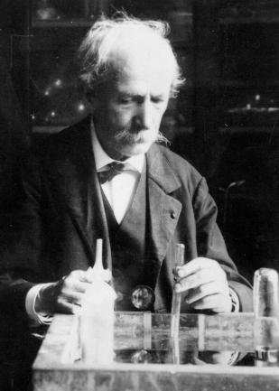
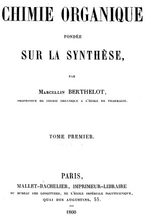
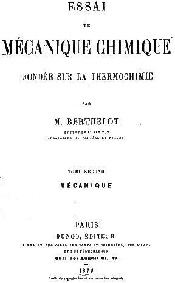
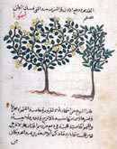

PREMIÈRE PARTIE
Marcellin Berthelot
SÉNATEUR, MEMBRE DE L'INSTITUT, PROFESSEUR AU COLLÈGE DE FRANCE
AVEC PLANCHES, FIGURES EN PHOTOGRAVURE D'APRÈS LES MANUSCRITS, TABLES ET INDEX PARIS GEORGES STEINHEIL, ÉDITEUR 2, RUE CASIMIR-DELAVIGNE, 2 - l889
partie I - II - III - IV - V - VI - VII -
plan détaillé de la première partie
revu le 10 octobre 2006
Introduction : Marcellin Berthelot [éloge de Darboux - éloge de Matignon] - Berthelot et le Journal des Savants - Introduction à la Chimie des Anciens [PréfaceListe des Mémoires de la première partie] - Notes -
Marcellin BerthelotJ'ai vécu longtemps auprès du savant illustre auquel la France vient de rendre les honneurs les plus grands dont elle dispose. Je l'ai connu vers 1862, lorsqu'il fréquentait, rue de Rivoli, avec des hommes tels que Renan, Gaston Boissier, Foucault, Sainte-Claire-Deville, Pasteur, la maison hospitalière de M. et Mme Joseph Bertrand. J'ai été, pendant plus de vingt ans, son confrère à l'Académie des Sciences et, pendant près de sept ans, son collaborateur direct comme Secrétaire perpétuel. Nous avons siégé ensemble dans d'innombrables commissions : partout et toujours, je n'ai pu m'empêcher d'admirer ce qu'il y avait de personnel et de vraiment neuf dans sa manière d'envisager les questions les plus variées. On a dit de lui qu'il avait l'esprit encyclopédique, et l'éloge était certainement mérité. Mais sa mémoire n'était pas seule à le servir, et son puissant cerveau, sans cesse en éveil, lui permettait de se former, longtemps a l'avance, des théories propres et originales qu'il développait volontiers, et qui lui servaient de guide dans l'étude des cas particuliers. Tout l'intéressait et tout l'attirait. Il aurait eu tous les titres pour siéger dans quatre de nos Académies. Il se présentera devant la postérité accompagné de douze à quinze cents mémoires, de trente volumes. Le 4 mars dernier, il nous apportait encore un article, qui figure dans nos Comptes rendus. Quand on examine cette suite étonnante de productions, on est frappé d'une particularité pour ainsi dire unique dans l'histoire des savants : dès le premier jour, Berthelot nous apparaît tel qu'il devait être dans le reste de sa carrière : en possession à la fois des principes et des méthodes, n'ayant plus rien à acquérir, ni en érudition, ni en puissance intellectuelle. Et même, si l'on en croit les meilleurs juges, ce sont les premiers travaux de Berthelot qui constitueront dans l'avenir la partie la plus solide et la plus durable de sa gloire. La culture scientifique, aujourd'hui plus que jamais, exige de la part de ceux qui s'y livrent un certain désintéressement. Nos découvertes d'un jour sont, pour la plupart, vouées a l'oubli ; utiles à leur heure, elles sont destinées à être remplacées, et en quelque sorte recouvertes, par les travaux de ceux qui nous succéderont. Dans certaines de ses parties, l'œuvre de Berthelot n'échappera pas au sort commun ; mais quelques-uns de ses écrits, et c'est le plus bel hommage qu'on puisse lui rendre, me paraissent destinés à demeurer toujours classiques. Parmi eux, il faut placer au premier rang l'ouvrage en deux volumes : La chimie organique fondée sur la synthèse, qu'après dix ans de recherches, il publia en

1860, c'est-à-dire à l'âge de 32 ans. Je voudrais qu'on mît entre les mains de nos étudiants, trop habitués à se contenter de l'enseignement oral, ce livre merveilleux, dont l'introduction et la conclusion sont d'ailleurs accessibles même aux profanes. Le lecteur demeure confondu devant l'étendue et la portée des conceptions, la précision du style, la rigueur géométrique avec laquelle sont présentées les expériences, l'enchaînement régulier des résultats. Dans aucun autre ouvrage on ne verra jamais apparaître avec plus d'évidence les avantages que peuvent donner à un esprit, d'ailleurs puissant, les études littéraires et philosophiques, telles qu'on les dirigeait en 1845, la libre vie de l'étudiant, en commerce intime et prolongé avec ses égaux ou ses pareils. Quand Berthelot a commencé ses recherches sur la synthèse, on considérait la chimie comme composée de deux branches essentiellement distinctes ; d'un côté la chimie minérale, c'est-à-dire l'étude des composés inorganiques, des métaux ou métalloïdes, que l'on pouvait recomposer et décomposer sans aucune difficulté; mais en fait, on n'obtenait pour chaque groupe de ces corps qu'un nombre relativement infime de combinaisons. L'autre branche, la chimie organique, avait pour objet l'étude des matières contenues dans les êtres vivants, animaux ou végétaux. On avait pu les détruire d'une manière graduée et obtenir, par une suite de décompositions ménagées, des composés de haut intérêt. Mais quand on arrivait au dernier terme de ces décompositions, les composés organiques apparaissaient comme formés de charbon uni aux éléments de l'eau et de l'air. Il y avait là une opposition tranchée : d'un côté une centaine d'éléments simples qui engendraient un nombre de composés relativement restreint; de l'autre quatre éléments seulement : le carbone, l'oxygène, l'hydrogène, l'azote, qui fournissaient à eux seuls les combinaisons les plus variées. Ces différences entre les deux chimies semblaient corroborer les idées qui avaient pris naissance. On n'avait jamais pu reproduire par le simple jeu des actions chimiques ces milliers de composés organiques que, chaque jour, la nature forme sous nos yeux. On fut donc conduit à penser que seule une action propre de la vie, une force vitale, était capable de les fournir. C'est en vain qu'en 1828 Woehler avait reproduit l'urée, un des produits immédiats les plus importants des animaux, que Pelouze et Kolb avaient obtenu par synthèse l'acide formique et l'acide acétique. Les procédés par lesquels ces résultats avaient été obtenus étaient si différents, et paraissaient si particuliers, qu'ils ne réussirent en rien à modifier les idées qui avaient cours. Berzélius écrivait encore en 1849 :
« Dans la nature vivante, les éléments paraissent obéir à des lois tout autres que dans la nature inorganique »,
et Gerhardt disait à son tour :
« Le chimiste fait tout l'opposé de la nature vivante; il brûle, détruit, opère par analyse; la force vitale seule opère par synthèse; elle reconstruit l'édifice que les forces chimiques ont abattu. »
C'est ce fantôme de la force vitale, opposé aux actions de nature purement chimique, que Berthelot a définitivement chassé de la chimie organique. En formant à partir des éléments, par des méthodes précises et générales, les carbures d'hydrogène, les alcools et leurs dérivés, les corps gras neutres et certains principes sucrés, il a su donner à sa science de prédilection les bases qui lui avaient manqué jusque-là. Il a du même coup effacé toute ligne de démarcation entre la chimie minérale et la chimie organique. Les chimistes l'ont suivi à l'envi dans la voie si large qu'il avait ouverte, et de nos jours la synthèse a procédé à pas de géants. Graebe, ruinant l'industrie de la garance, a reproduit l'alizarine; V. Baeyer a obtenu l'indigo artificiel. [cf. teinture] On a réussi à tirer du goudron de houille des colorants infiniment plus variés et souvent plus beaux que les matières extraites des végétaux. Puis sont venus les parfums, ainsi que les produits thérapeutiques. Il n'est pas d'année où la science et l'industrie ne s'enrichissent de vingt à trente mille composés nouveaux qui n'avaient jamais trouvé dans la nature les conditions dynamiques nécessaires à leur formation. C'est ce que Berthelot, dès le début, avait exprimé par cette formule saisissante : La chimie crée son objet. Il a entendu par là qu'elle ne se borne pas, comme les sciences naturelles, à comparer et à classer les corps existants :
« La synthèse des corps gras neutres, disait-il, ne permet pas seulement de former les quinze ou vingt corps gras naturels connus jusque-là, mais elle permet encore de prévoir la formation de plusieurs centaines de millions de corps gras analogues, qu'il est désormais facile de produire de toutes pièces, en vertu de la loi générale qui préside à leur composition. »
Berthelot, on le voit, savait toute l'étendue des résultats qu'il avait obtenus; mais il connaissait aussi, et mieux que personne, leurs limites. Il faut lire à ce sujet un curieux passage de son ouvrage où, parlant de la chimie physiologique, il fait remarquer finement que, si les corps des animaux sont des laboratoires où peuvent s'exercer les actions chimiques, ces actions s'y exercent toutefois dans des conditions très délicates de température, de dissolution, d'affinités peu énergiques, en dehors desquelles la vie deviendrait impossible. Ainsi, à côté du problème qu'il avait résolu, il ne craignait pas d'en indiquer un autre dont l'importance est manifeste : non seulement reproduire les composés organiques par synthèse, mais aussi retrouver et définir les conditions mêmes dans lesquelles ils ont pris naissance au sein des êtres vivants. Aujourd'hui encore ce vaste problème est loin d'être élucidé dans toutes ses parties ; mais il est permis d'affirmer que les résultats de Berthelot en ont singulièrement avancé la solution. Après avoir débarrassé la chimie organique de la force vitale, après avoir établi ainsi l'unité dé la chimie, il a voulu faire disparaître un autre fantôme, en définissant et assujettissant à des lois précises, s'il était possible, ce que l'on désignait, ce que l'on désigne aujourd'hui encore, sous le nom vague d'affinité. Sur les traces de savants qu'il a soigneusement cités, Dulong, Andrews, Favre et Silbermann, J. Thomsen, il a consacré près de quarante ans de sa vie à réunir les éléments d'une science nouvelle, qu'il a nommée la thermochimie. Pour mesurer les quantités de chaleur absorbées ou dégagées dans les réactions, il a inventé les méthodes calorimétriques les plus précises; les ingénieux appareils qu'il a construits pour les appliquer sont aujourd'hui universellement adoptés. Mais il ne pouvait être donné à la chimie seule de résoudre toutes les difficultés qui se dressent à chaque pas dans les études de ce genre : pour nous éclairer complètement sur les causes et les circonstances des réactions, il fallait l'intervention de principes essentiellement nouveaux, empruntés à une autre science, et dus au génie de Sadi Carnot et de Robert Mayer. Si Berthelot n'a pas obtenu dans cette direction tout le succès qu'il avait espéré, il a du moins frayé la voie; ses innombrables expériences lui ont fourni une foule de données précieuses, grâce auxquelles il a pu développer et préciser les belles découvertes de Laplace et de Lavoisier sur les origines de la chaleur animale, et aussi, et surtout, constituer sur ses véritables bases la théorie des corps explosifs, devenue entre ses mains un des chapitres les plus élégants et les plus instructifs de la chimie moderne. C'est pendant le siège de Paris, au moment où il fut nommé président du Comité scientifique pour la défense de Paris, qu'il inaugura ces nouvelles et mémorables études. On ne connaissait à cette époque que des règles purement empiriques pour régler les conditions du tir, et l'on savait à peine quelle était la nature des gaz produits par cette vieille poudre noire dont il nous a retracé l'intéressante histoire. Grâce ausi travaux de Berthelot, poursuivis en collaboration avec mes deux confrères Sarrau et Vieille, on connut et l'on put calculer les effets que produisent les explosifs les plus divers avec toute la précision que peuvent atteindre les sciences appliquées. Sarrau m'a raconté plus d'une fois quelle fut la stupéfaction d'un ministre de la guerre, dont j'ai oublié le nom (il appartenait à l'artillerie), lorsque mon cher confrère, alors directeur des Poudres, lui apporta une formule qui permettait de calculer à l'avance la vitesse imprimée à un projectile par une poudre de composition donnée. Berthelot, en collaboration avec M. Vieille, institua une suite de travaux sur la vitesse de propagation des phénomènes explosifs, sur ce que l'on a appelé l'onde explosive, par des méthodes où toutes les objections étaient prévues et qui permettaient de mesurer des durées s'élevant à quelques dix-millièmes de seconde. On sait que l'ensemble de toutes ces recherches a servi de point de départ à cette belle découverte, faite par M. Vieille, de la poudre sans fumée, qui a sans doute contribué à nous épargner une guerre en nous assurant pour deux ou trois ans une grande supériorité dans l'armement. Il m'est impossible d'analyser ici bien d'autres travaux de M. Berthelot, ses recherches sur la formation des éthers et l'isomérie, sur l'effluve électrique, les expériences sur la fixation de l'azote atmosphérique par les plantes, qu'il poursuivait dans son laboratoire de Meudon. Mais les lecteurs de ce Journal me reprocheraient à bon droit de passer sous silence les études persévérantes qu'il a consacrées à l'histoire des sciences, et à celle de la chimie en particulier. C'est surtout aux alchimistes [cf. sur ce site : Origines de l'alchimie - Introduction à la Chumie des Anciens - divers articles in Idée alchimique I et II] qu'il s'intéressait, car il considérait que, par leurs travaux sur la pierre philosophale et sur l'élixir de longue vie, ils avaient été les précurseurs réels des sciences expérimentales. Et comme il était loin d'être un esprit positiviste à la manière de Comte ou de Littré, comme il avait, dans ses créations philosophiques, fait place à ce qu'il appelait la science idéale à côté de la science réelle, il aimait à parcourir ces papyrus alchimistes, dans lesquels les rêveries et les imaginations mystiques se mêlent aux procédés positifs et aux résultats définis. Je ne m'attarderai pas à énumérer toutes les collections qu'il a ainsi publiées et commentées. À l'étranger, elles ont fait sensation et, lors de la célébration de son cinquantenaire scientifique, la Société chimique de Berlin, composée de bons juges en la matière, n'hésitait pas à lui écrire :
« Vos admirables écrits historiques ont rejeté bien loin dans l'ombre tout ce qui avait été publié depuis Hermann Kopp sur le développement de notre science. »
En France, où l'on néglige bien à tort l'histoire de la science, les alchimistes seuls, car il y a encore des alchimistes, ont approfondi les publications de Berthelot et lui ont même témoigné, lors de son cinquantenaire, leur reconnaissance et leur admiration. Il me resterait encore, si M. Briand ne s'était acquitté de cette partie de ma tâche infiniment mieux que je ne saurais le faire, à insister sur les idées philosophiques, sur le rôle politique et social de Berthelot. Bornons-nous à rappeler ici qu'il fut tolérant, à la fois dans ses actes et dans ses pensées, qu'il fut aussi plus d'une fois le défenseur heureux des intérêts de la haute culture scientifique auprès des pouvoirs publics. Mieux que personne et avec toute l'autorité de son génie, il a su mettre en évidence ces rapports nécessaires et étroits que nulle nation ne saurait méconnaître sans péril, et qui rattachent au maintien, au développement des études désintéressées, les progrès de l'éducation des mœurs publiques et de l'industrie nationale. Berthelot est mort le 18 avril vers 5 heures et demie. On connaît sa fin si touchante. Il était venu à 3 heures dans mon cabinet pour me faire la confidence de ses angoisses ; il m'avait rappelé tout ce qu'il devait à Mme Berthelot, à cette compagne de sa vie qui, pendant quarante-cinq ans et dans toutes les épreuves, avait su raffermir son cœur et soutenir son esprit, un peu inquiet de sa nature. Il espérait encore contre toute espérance. Déjà gravement atteint, il n'a pu résister à un choc, à une douleur qu'il se refusait à prévoir.
G. DARBOUX.CAMILLE MATIGNON
Marcellin BERTHELOT
L'illustre savant auquel la France tout entière a rendu un dernier et solennel hommage a tenu une place prépondérante dans la science du XIXe siècle. Son œuvre est prodigieuse, presque surhumaine. Aucun homme n'est capable de la saisir dans son ensemble, car elle exigerait, pour être comprise dans le détail, des connaissances encyclopédiques que nul ne peut se flatter aujourd'hui de posséder.Les savants du monde entier s'inclinaient devant cette belle intelligence, unanimement reconnue comme l'une des plus vastes de son époque. Cette intelligence était d'ailleurs puissamment aidée par une mémoire dont la réputation n'était pas moins universelle. C'est en joignant à ces qualités naturelles un travail méthodique, opiniâtre et incessant, que Berthelot put édifier une œuvre immense où se manifeste l'universalité de ses connaissances. Lettré, philosophe, historien, aucun sujet ne lui était étranger; il avait sur toutes choses une information étendue et précise. Pierre- Eugène-Marcellin Berthelot naquit à Paris le 28 octobre 1827, dans une maison située place de Grèves, actuellement place de l'Hôtel-de-Ville. Il fit ses études au Lycée Henri IV et montra tout de suite des aptitudes remarquables dans les directions les plus variées. Fouqué, en rappelant, au cinquantenaire scientifique du maître, la vieille camaraderie du lycée qui l'unissait à Berthelot, ajoutait :
« Déjà, à cette époque, vous aviez conscience de l'avenir scientifique élevé qui vous était réservé. Vos professeurs, et même vos condisciples, en étaient également persuadés, et, plus que personne, j'avais foi en vous. »
En 1846, Berthelot remporte le prix d'honneur de Philosophie au Concours général. Il se consacre désormais à l'étude des sciences sans passer par aucune école ; nommé préparateur de Balard au Collège de France en janvier 1831, il conserve cette modeste fonction, avec traitement annuel de 500 francs, pendant neuf ans. Dans l'intervalle, il se fait recevoir docteur es sciences (avril 1884) avec une thèse magistrale sur la Reproduction des corps gras naturels. Il quitte le 20 décembre 1859 le Collège de France pour l'École de Pharmacie, où il vient d'être nommé professeur de Chimie organique. L'année suivante, il réunit l'ensemble de ses recherches sur la synthèse chimique dans deux volumes importants : Chimie organique fondée sur la synthèse. L'Académie des Sciences lui décerne alors le Prix Jecker pour l'ensemble de ses travaux. Berthelot est âgé de trente-trois ans, son nom est connu des chimistes du monde entier; sa réputation pénètre dans les salons parisiens, comme en témoignent les lettres adressées en 1860 et 1861 par Mme Didier à Mme Edgar Quinet :
« Je ne veux oublier de vous faire part d'un savant très savant qui a nom M. Berthelot. On ne jure que par lui rue de l'Ouest [rue Michelet]. Mme Michelet m'a dit « qu'il irait à la postérité » et qu'il ne s'en tenait pas au génie. Il est, de plus, plein d'esprit et d'une société charmante. Elle m'en a fait un portrait d'homme accompli; je suis curieux de ce prodige, je demande aie connaître et à vous en dire mon impression » (26 octobre 1860).
Après l'avoir reçu, elle écrit (19 janvier 1861) :
« Il paraît timide, il a une figure très douée et très intéressante. J'ai beaucoup goûté la conversation de M. Berthelot. Si j'ai un regret, c'est de ne pouvoir le suivre sur le terrain de la science; il a fait de grandes découvertes en Chimie et publié deux volumes au-dessus de ma portée : j'en ignorerais jusqu'à la langue. Mais on dit que l'exposition du livre est abordable, et donne les conclusions de l'ensemble de ses travaux. Je tâcherai de m'en faire une idée. Au reste, il n'est étranger à rien, il a reçu une éducation très littéraire. »
Sur l'initiative de Balard, un certain nombre de professeurs du Collège de France et de chimistes de l'Institut demandent aux Pouvoirs publics la création d'une chaire de Chimie organique au Collège de France, afin de permettre à Berthelot de développer ses idées. La demande est accueillie favorablement par Duruy, ministre de l'Instruction publique, et la chaire est créée le 8 août 1863. Berthelot abandonne alors l'École de Pharmacie pour le Collège de France, qu'il ne devait plus quitter.Membre de l'Académie de Médecine en février 1863, il entre seulement à l'Académie des Sciences le 3 mars 1873, à l'âge de quarante-six ans, dans la Section de Physique, en remplacement de Duhamel. Il a créé à cette époque tout un ensemble de méthodes calorimétriques expérimentales. Il n'est pas seulement un chimiste de premier ordre, mais aussi un physicien éminent, ce que reconnaît l'Institut en lui attribuant la première place vacante dans la Section de Physique. La plupart des sociétés scientifiques et académies étrangères consacrent la réputation de Berthelot en l'admettant dans leur sein. Il est nommé successivement membre de la Société Royale de Londres, de la Société de Physique de Genève, de la Société des naturalistes de Moscou et des Académies de Saint-Pétersbourg, Stockholm, Dublin, Copenhague, Munich, Turin, Amsterdam, Hongrie, Boston, Lisbonne, Vienne, Berlin, etc. Promu chevalier de la Légion d'honneur le 13 août 1861, il parcourt rapidement toute la hiérarchie et, lors de son cinquantenaire scientifique, le Gouvernement de la République lui avait déjà décerné la plus haute récompense dont il disposât, en le nommant Grand- Croix. L'intérêt que porte Berthelot à la réorganisation de notre enseignement le conduit à l'Inspection générale de l'Enseignement supérieur en 1876; à la Section permanente de l'Instruction publique, dont il devient le vice-président; à l'École des Hautes Études, dont il est le président pour la Section des Sciences physiques. Président du Comité scientifique de la défense de Paris en 1870, il est nommé membre du Comité consultatif des Poudres et Salpêtres en 1876, et président de la Commission des Substances explosives en 1878. Élu sénateur inamovible en 1881, il en profite pour plaider dans de nombreuses circonstances la cause de l'enseignement supérieur et des recherches scientifiques. En 1886, il devient ministre de l'Instruction publique sous le ministère Goblet et est appelé plus tard par M. Léon Bourgeois au quai d'Orsay. Berthelot avait succédé à Joseph Bertrand à l'Académie Française et y avait été reçu par Lemaître. Je n'ai pas la prétention, dans les quelques pages dont je puis disposer ici, d'apprécier comme il conviendrait l'œuvre du maître; je me contenterai d'en indiquer les grandes lignes.
II
Berthelot a transformé et agrandi le domaine de la Chimie, en même temps qu'il faisait progresser cette science du côté des sciences exactes. Avant Berthelot, la plupart des chimistes considèrent les corps qui se forment dans les organismes vivants comme impossibles à reproduire dans les laboratoires à partir de leurs éléments constitutifs: carbone, oxygène, hydrogène, azote, par le seul jeu des affinités chimiques.
« Dans la nature vivante, écrivait Berzélius en 1849, les éléments paraissent obéir à des lois tout autres que dans la nature inorganique ».
Une force mystérieuse, la force vitale, est jugée indispensable. à leur élaboration. Le chimiste ne peut que les détruire, les disséquer à l'aide de réactifs appropriés et en retirer quelques corps nouveaux, pierres isolées de l'édifice complexe. Son rôle est donc extrêmement limité, puisque, dans le domaine des composés organiques, il n a à sa disposition, comme objets d'étude, que les seuls principes immédiats élaborés par les animaux et les végétaux. Berthelot reprend les produits de désagrégation et tente, de proche en proche, de les recombiner ensemble pour reconstituer l'édifice initial. C'est ainsi que, dans un premier travail vraiment magistral, il reconstitue les graisses, les huiles, les beurres à partir de la glycérine et des acides dérivés de ces matières grasses. La barrière qui séparait les réactions de laboratoire des réactions des organismes vivants disparaît désormais et l'unité des forces biologiques et physico-chimiques se trouve ainsi établie. On comprend toute l'importance d'une semblable démonstration. Ce n'est pas tout. C'est ici que va apparaître en quelque sorte la puissance créatrice du chimiste. Aussitôt que Berthelot eut trouvé les conditions de reproduction d'une matière grasse, la stéarine par exemple, il eut en môme temps, par la généralisation du procédé, le moyen de reproduire un nombre infini de matières grasses nouvelles. Ainsi, tandis que la plupart des graisses animales ou végétales sont formées essentiellement par le mélange de trois ou quatre espèces chimiques bien définies, les seules rencontrées dans la nature, le chimiste peut en fabriquer dans son laboratoire un nombre aussi grand qu'il le désire.
« La synthèse des corps gras neutres, disait Berthelot en 1860, ne permet pas seulement de former quelques corps gras naturels connus jusqu'ici, mais elle permet encore de prévoir la formation de plusieurs centaines de millions de corps gras analogues, qu'il est désormais facile de produire de toutes pièces, en vertu de la loi générale qui préside à leur composition ».
Le domaine de la Chimie devient ainsi illimité. Le chimiste crée lui-même, par la synthèse, l'objet de ses études, et, dans les milliers de corps nouveaux qui, chaque année, sortent des laboratoires du monde entier, il distingue ceux dont les propriétés pourront être utilisées dans les arts, dans l'industrie, dans la médecine, etc. La synthèse des matières grasses n'était qu'une synthèse partielle; la glycérine et les acides gras générateurs provenaient eux-mêmes de graisses préalablement dédoublées ; il fallait, imitant la nature, chercher à produire des matières organiques à partir des corps minéraux. Prenant le carbone sous la forme oxyde de carbone, Berthelot combine ce gaz avec la potasse et engendre le formiate de potasse; le formiate de baryte chauffé abandonne du méthane qui, par pyrogénation, pourra donner de l'acétylène, de l'éthylène, de l'éthane. A partir de ces carbures ainsi formés, Berthelot passe aux alcools correspondants, méthylique, éthylique, et à leurs dérivés les plus variés. Ce n'est pas, cependant, sous forme d'oxyde de carbone que le charbon pénètre dans les plantes; celles-ci édifient les molécules des matières grasses, des hydrates de carbone nécessaires à leur développement, avec l'anhydride carbonique et l'eau. Berthelot essaie vainement d'engendrer un premier carbure à partir de ces deux substances; il les remplace alors par deux corps qui présentent avec eux les fonctions les plus voisines, le sulfure de carbone et l'acide sulfhydrique ; en les faisant passer tous deux sur du cuivre, il se forme du méthane. Le fer substitué au cuivre permet d'obtenir la même réaction a. partir du sulfure de carbone et de l'eau. Dans son ouvrage Chimie organique fondée sur la synthèse, Berthelot expose

l'ensemble de ses travaux, en même temps qu'il laisse entrevoir les méthodes à suivre pour résoudre le problème synthétique dans les séries non étudiées. Il présente une vue d'ensemble des produits organiques et, pour les classer, introduit la notion de fonction. Il avait préalablement, à propos de la glycérine, montré que la molécule de ce corps possède trois fois la fonction alcoolique et introduit par là même la notion d'alcools polyatomiques, de polyalcools. Berthelot a mis en œuvre l'énergie électrique, sous ses formes les plus variées, pour faire entrer les corps en combinaison ou pour détruire les composés. L'arc électrique lui a permis de réaliser la synthèse organique la plus simple, la plus inattendue et la plus féconde, celle de l'acétylène. Un arc jaillissant dans une atmosphère d'hydrogène transforme partiellement cet hydrogène en acétylène, car le carbone en vapeur qui constitue l'arc s'unit directement à l'élément gazeux grâce à sa haute température de 3.500°. Le carbure d'hydrogène, stable à la plus haute température qui ait été réalisée, devient, au contraire, instable dans le voisinage de la température ordinaire; il suffît de le comprimer au delà de deux atmosphères pour qu'il se décompose avec explosion, sous l'influence d'une étincelle, en ses deux éléments générateurs, carbone et hydrogène. Si, au contraire, on le chauffe légèrement vers 400°, le même acétylène retourne à sa forme stable, carbone et hydrogène, en passant par une série de termes intermédiaires, benzène, toluène, naphtalène, anthracène, picène, etc., carbures de plus en plus pauvres en hydrogène, dont la limite sera le charbon. Ces nouveaux carbures vont constituer le point de départ de la préparation de matières colorantes, de parfums, de succédanés du sucre, d'explosifs nouveaux, etc. A l'acétylène on peut rattacher aussi, à l'aide de réactions simples, l'éthylène, l'éthane, les acides oxalique et acétique, l'alcool, etc. C'est ainsi qu'en chauffant le carbure avec son volume d'hydrogène, on engendre l'éthylène, susceptible de fixer l'eau en présence d'acide sulfurique pour former l'alcool. La synthèse totale de ce principe immédiat ternaire se trouve ainsi réalisée à partir de ses trois éléments constitutifs, le carbone, l'oxygène et l'hydrogène. L'étincelle électrique apporte aussi sa collaboration à la synthèse chimique. Par exemple, des étincelles produisent de l'acide cyanhydrique quand l'azote se trouve en présence d'acétylène ou généralement d'une vapeur hydroearbonée quelconque. Le courant électrique passant dans une solution aqueuse conductrice permet d'obtenir des produits d'oxydation à l'anode et des produits de réduction à la cathode. La solution sulfurique se peroxyde en donnant un corps nouveau, l'acide persulfurique, dont l'existence est d'abord mise en doute par quelques chimistes inexpérimentés, jusqu'au jour où les persulfates deviennent des produits industriels. Berthelot a d'ailleurs étudié d'une façon approfondie toutes les réactions chimiques secondaires qui se produisent sur les électrodes ou dans leur voisinage. Aucun chimiste n'avait, sur ces questions complexes, des connaissances expérimentales aussi étendues ; elles permettent de comprendre le scepticisme avec lequel il accueillait toutes les théories mathématiques négligeant ces actions secondaires. C'est surtout avec l'effluve électrique que Berthelot a obtenu les synthèses les plus délicates; il a montré que ces effluves constituent la forme d'énergie la plus active et la plus féconde pour obliger les corps à se combiner entre eux. Grâce à l'effluve, il a pu unir l'iode à l'oxygène, engendrer l'anhydride persulfurique à partir du gaz sulfureux et de l'oxygène, faire absorber l'azote en quantités considérables par le sulfure de carbone, le benzène, etc. Tout le monde se rappelle encore la découverte de l'argon, faite par lord Rayleigh et Ramsay, qui, après plusieurs années d'essais variés, ne parvinrent pas à faire entrer en combinaison le nouveau gaz. Ces savants adressèrent à Berthelot quelques centimètres cubes d'argon et, huit jours après, l'éminent chimiste annonçait à l'Académie des Sciences qu'il était parvenu à unir l'argon au sulfure de carbone par l'intermédiaire de l'effluve. La petite quantité de matière résineuse obtenue dans ces conditions, chauffée suffisamment, se décomposait en régénérant l'argon avec ses propriétés initiales. Les contemporains de Berthelot apportèrent aussi leur part à l'édification de la synthèse chimique. Il convient de rappeler, en particulier, son émule, Wurtz, auquel on doit des travaux très importants sur la synthèse des ammoniaques composées, des carbures d'hydrogène et des glycols.
« C'est à l'occasion de la synthèse des glycols, écrivait Berthelot en 1881, que s'est élevée entre nous une rivalité féconde, où chacun a développé les ressources variées d'un esprit aussi différent par son point de vue que par son évolution. Des travaux sans nombre sont sortis de ces théories et ont transformé depuis trente ans la Chimie organique. Wurtz a eu une part de premier ordre dans cette transformation. »
III
Persuadé de l'unité des forces naturelles, Berthelot cherche à ramener les lois des transformations chimiques à celles de la Mécanique; il s'attache à développer une science nouvelle, la Thermochimie,

d'où procédera la Mécanique chimique. Lavoisier et Laplace, Hesse, Favre et Silbermann ont effectué déjà quelques mesures calorimétriques; mais le principe de l'équivalence, dans l'ordre des réactions chimiques; est une notion nouvelle, qui va se préciser par les recherches de Berthelot. A cette époque, Regnault a effectué ses nombreuses expériences calorimétriques et donné à cette partie de la Physique une précision inconnue jusque-là. Regnault obtient cette précision en compliquant les appareils, en superposant en quelque sorte à l'appareil fondamental des appareils accessoires chargés d'éliminer ou de mesurer les différentes causes d'erreur. Berthelot, au contraire, arrive à la précision par la simplicité des moyens. La technique expérimentale qu'il constitue de toutes pièces pour la mesure des différents facteurs calorifiques est une œuvre admirable qui aurait suffi à elle seule pour illustrer un physicien. J'ai eu l'occasion d'initier bien des savants français et étrangers aux méthodes calorimétriques de Berthelot, je ne l'ai jamais fait une seule fois sans constater, après une première expérience, leur étonnement et leur admiration pour des méthodes aussi simples et aussi précises. Ces méthodes devaient atteindre leur perfection, par la suite, dans l'emploi de la bombe calorimétrique. L'ensemble des faits thermo-chimiques accumulés par Berthelot confond l'imagination. Les conséquences qui en découlent s'étendent à tous les domaines de la science. Les ingénieurs, les expérimentateurs et les théoriciens font usage, à chaque instant, de ses données calorimétriques. Dans l'ordre théorique, Berthelot montre que la quantité de chaleur est le facteur principal d'où dépendent les conditions de la combinaison ou de la décomposition des corps ; mais la chaleur globale de la réaction est reliée à ces conditions par une relation extrêmement complexe. Berthelot cherche à dégager de cette chaleur globale toutes les calories qui correspondent à des phénomènes réversibles et obtient une quantité, la chaleur chimique, qui se rapproche de la chaleur non compensée dans la réaction. Depuis 1863, Berthelot a travaillé sans cesse à établir et à préciser les différents termes de l'expression de la chaleur chimique. Cette chaleur chimique, surtout dans les solutions, n'est pas toujours d'un calcul commode; aussi, dans l'enseignement secondaire, a-t-on laissé subsister l'ancienne règle du travail maximum, qui, dans beaucoup de cas, peut donner une idée exacte de la marche de la réaction. L'étude des piles, qui forme, avec la prévision des réactions, un seul et même problème, a été l'objet de nombreux travaux de Berthelot. Comme je l'ai dit plus haut, il a étudié d'une façon très approfondie tous les phénomènes secondaires qui s'y produisent, de manière à dégager de l'énergie chimique globale toutes ces énergies secondaires et à chercher à donner, si possible, une traduction expérimentale des écarts entre les deux énergies voltaïque et chimique. M. Berthelot a appelé bien des fois l'attention sur l'importance de ces réactions secondaires, souvent négligées par les théoriciens. C'est ainsi que les élèves de Helmholtz ne purent vérifier l'exactitude de la relation entre l'énergie voltaïque et l'énergie chimique qu'en mesurant directement l'énergie chimique au calorimètre, comme le fit Jahn, et non, comme l'avait fait Braüner, en la calculant d'après la réaction chimique fondamentale se produisant dans la pile. D'ailleurs, d'une façon générale, l'étude thermochimique des réactions a obligé Berthelot à pénétrer dans leur moindre détail, et, avec son esprit de généralisation, il a su en dégager des observations d'ordre général. C'est ainsi que la notion de travail préliminaire, nécessaire pour amorcer les réactions, correspond dans le langage actuel à une élévation de température nécessaire pour vaincre les frottements. Il a montré également que ce ne sont pas les réactions donnant le système le plus stable qui se forment d'abord, mais des systèmes instables intermédiaires. On retrouve là le principe de l'apparition des formes instables avant celle des formes stables, principe qui s'est surtout précisé dans ces dernières années. D'ailleurs, tous les physico-chimistes modernes sont allés puiser dans les nombreux documents thermochimiques accumulés par Berthelot, et quelques-uns ont même quelquefois reproduit simplement ses recherches, mais avec le langage qui correspondait à la physico-chimie de ces dernières années. Je suis convaincu, pour ma part, que c'est surtout par la thermochimie que Berthelot avait acquis ce sens vraiment génial des phénomènes chimiques, grâce auquel il paraissait presque les dominer et les commander. La Thermochimie devait conduire fatalement Berthelot à l'étude des explosifs. Le rôle qu'il joua comme Président de la Commission de savants, organisée par le Gouvernement de la Défense nationale pendant le siège de Paris, fut pour lui l'occasion de s'initier à la connaissance de ces produits. Les travaux variés qu'il a effectués dans ce domaine, soit seul, soit en collaboration avec les membres de la Commission des Poudres et Salpêtres, ont été réunis en grande partie dans son traité Sur la force des matières explosibles d'après la Thermochimie. Je voudrais ici parler simplement de ses « études géniales », suivant l'expression de Nernst, sur l'onde explosive. Dans un mélange d'oxygène et d'hydrogène, par exemple, la combinaison se propage sous la forme d'une onde, dont tous les facteurs peuvent être définis à l'avance quand on connaît les propriétés du mélange détonant. Cette surface d'onde, qui est le siège de la combinaison, se propage avec une vitesse bien supérieure à celle du son, 2.800 mètres par exemple dans le cas de l'oxygène et de l'hydrogène, et telle que l'influence refroidissante des parois n'a pas le temps de s'exercer; aussi la vitesse est-elle constante et indépendante de la nature du tube qui contient le mélange. La surface d'onde est à une température extrêmement élevée et produit une forte pression sur son passage, pression qu'il est facile d'enregistrer en plaçant sur le trajet des manomètres crushers. L'onde explosive a permis de réaliser les températures les plus élevées (4.000°), mais les produits de la combustion ne restent soumis à cette température que pendant un temps très court. Berthelot et Vieille, dans des travaux extrêmement remarquables, ont utilisé l'onde explosive pour fournir des renseignements quantitatifs sur les propriétés des gaz à des températures atteignant jusqu'à 4.000°. Parmi les conséquences nombreuses qui en découlent, je voudrais signaler ce fait curieux que l'azote, l'oxygène et l'oxyde de carbone ont jusqu'à 4.000° des chaleurs spécifiques moléculaires identiques, ce qui tend à prouver que leur molécule n'est pas dissociée à cette haute température pendant le temps très court de réchauffement. Des études théoriques sur les explosifs, sur les vitesses d'explosion devait découler la découverte de la poudre sans fumée, faite par M. Vieille, l'élève et le collaborateur de Berthelot. Elle devait donner pendant quelque temps une supériorité à notre armement. C'est ici le lieu de remarquer que l'Allemagne, sur cette question, comme sur tant d'autres, fusil de petit calibre, sous-marins, canon à tir rapide, ballons dirigeables, n'a jamais fait que suivre et copier la nation qu'elle avait vaincue en 1870. En collaboration avec Péan de Saint-Gilles, Berthelot a donné en 1862, dans un Mémoire célèbre, la définition de l'équilibre, en même temps qu'il montrait, par tout un ensemble de réactions méthodiquement étudiées, le rôle du temps dans les phénomènes chimiques. Il cherche à traduire dans des formules mathématiques le résultat de ses expériences, introduit la notion de masses actives et établit une relation qui, légèrement modifiée, devait conduire l'année suivante Guldberg et Waage, comme ils le reconnaissent eux - mêmes, à l'établissement de la loi d'action de masse. Par cette étude sur l'éthérification, le nom de Berthelot mérite d'être inscrit, à côté de ceux de Saint-Claire Deville et de Raoult, parmi les créateurs de la Chimie physique. Comme conséquence de ses études de synthèse, le rôle de l'azote dans le monde vivant a toujours préoccupé Berthelot. Il y a quelques années encore, cet élément était considéré comme un corps inerte, incapable d'entrer en réaction, et, cependant, il est indispensable à la vie des plantes et des animaux. Par quels mécanismes l'azote minéral passe-t-il à l'état d'azote organique ? La question est aujourd'hui en grande partie résolue, grâce surtout aux expériences de Berthelot. Sous l'influence d'actions électriques., étincelle ou effluves, l'azote et l'oxygène de l'air se combinent entre eux pour former d'abord, de l'oxyde azotique et ensuite, par le fait de réactions secondaires, des vapeurs nitreuses. De même, toute combustion vive, celle du charbon, par exemple, entraîne la combinaison de petites quantités d'azote et d'oxygène. La différence de potentiel électrique entre deux couches d'air de niveau inégal peut être utilisée pour faire absorber l'azote par les corps les plus variés. Par des expériences quantitatives précises, Berthelot démontre que les actions électriques extérieures, orage, différences de potentiel, et les combustions du charbon consommé annuellement dans le monde, sont insuffisantes à rendre compte de la quantité totale d'azote nécessaire au développement des plantes. Il faut donc chercher d'autres causes. C'est alors que Berthelot s'attache à l'étude du sol ; il montre que, dans certains cas, la terre s'enrichit en azote sous l'influence de bactéries qui y pullulent ; la terre végétale n'est plus une matière inerte : c'est un ensemble vivant dans lequel un monde d'infiniment petits travaille à faire rentrer dans le cycle des réactions organiques l'azote élémentaire de l'air. Les idées du maître sont d'abord vivement combattues, mais bientôt Hellriegel et Wilfarth, Schlœsing et Laurent, Winogradski, apportent chacun de son côté des contributions importantes à cette question de l'absorption de l'azote et démontrent d'une façon éclatante la justesse des idées émises par Berthelot. Ce n'est pas d'ailleurs le seul cas où Berthelot fut vivement combattu par de savants contradicteurs. Un Mémoire posthume de Claude Bernard fut, vers 1878, l'occasion d'une discussion scientifique des plus élevées et des plus serrées entre Berthelot et Pasteur. Ce dernier soutenait, avec expériences à l'appui, que la fermentation du glucose exige absolument la présence de la levure de bière, tandis que, d'après Berthelot, la transformation du glucose en alcool pouvait avoir lieu par l'intermédiaire d'un ferment non vivant, d'une diastase émise par la levure elle-même. Les deux savants restèrent sur leurs positions sans aboutir à une conclusion commune. Vingt ans après, un savant allemand, Büchner, démontrait que la levure, suffisamment pressée, fournit un liquide sans trace de cellule vivante et susceptible de continuer pendant quelque temps la fermentation des jus sucrés. Le flair génial de Berthelot avait eu raison de l'habileté expérimentale de Pasteur.
IV
Familiarisé avec les langues anciennes, Berthelot avait une compétence unique pour étudier l'histoire de la Chimie dans l'Antiquité. Dans les Origines de l'Alchimie, il montre que l'Alchimie était fondée
sur une doctrine philosophique, celle de l'unité de la matière envisagée comme formée de quatre éléments. Sa pratique reposait sur les expériences réelles que faisaient les orfèvres et les métallurgistes gréco-égyptiens. C'est ce que l'auteur a établi complètement, par l'étude comparative d'un papyrus trouvé à Thèbes et des recettes du pseudo-Démocrite, dans un second ouvrage intitulé : Introduction à l'étude de la Chimie des Anciens et du Moyen-Age. [cf. la présente section et les suivantes] Berthelot a été conduit par là à publier les textes alchimistes grecs, syriaques et arabes, qui jusqu'ici étaient demeurés inédits, avec la collaboration de linguistes. distingués : MM. Rouelle pour le grec, Rubens Duval pour le syriaque, Boudas pour l'arabe. Ainsi s'est trouvée reconstituée toute une branche des sciences de l'Antiquité, presque inconnue jusqu'alors. Il a d'ailleurs poursuivi ses études jusqu'au XIVe siècle, afin d'établir par quelles voies la science alchimique avait pénétré en Occident. Il a reconnu que cette voie était double : d'une part, tradition des arts et métiers, qui était restée jusqu'ici à peu près complètement ignorée et qui, cependant, a subsisté sans interruption depuis la chute de l'empire romain ; d'autre part, les traductions syriaques des alchimistes grecs, également ignorées, lesquelles sont devenues l'origine des ouvrages arabes; ces derniers, enfin, ont été traduits en latin aux XIIe et XIIIe siècles. Profondément patriote, Berthelot a toujours considéré comme un devoir, pour tout savant, de mettre à la disposition de son pays le fruit de son expérience et de ses connaissances. Il n'a jamais refusé les services demandés, au nom de l'intérêt public, dans les ordres les plus différents : applications spéciales à l'industrie ou à la défense nationale, enseignement public, politique générale. Il faisait partie de toutes les Commissions techniques rattachées aux divers ministères et apportait à la résolution des problèmes posés toutes les qualités mises en œuvre dans son laboratoire. Cette activité multiple de Berthelot fut l'occasion d'articles ou de discours variés, réunis en quatre volumes : Science et philosophie, Science et morale, Science et éducation. Science et libre pensée. Comme tous les créateurs, Berthelot avait une foi puissante, une foi qui lui a servi de guide directeur dans sa vie privée, et publique, la foi dans la science et dans ses méthodes. Pour Berthelot, la science domine tout, elle rend seule des services définitifs, son domaine n'est pas restreint à l'étude des faits positifs ; le progrès matériel dû à la science est le moindre fruit de son travail; elle réclame un domaine supérieur et plus vaste, celui du monde moral et social. Dans sa Lettre à Renan sur la science idéale et la science positive, après avoir exposé d'une façon magistrale, par un exemple concret, comment la science positive procède en établissant les faits et en les rattachant les uns aux autres par des relations immédiates, Berthelot étend la même méthode à l'étude du monde moral :
« Dans l'ordre moral comme dans l'ordre matériel, il s'agit d'abord d'établir les faits et de les contrôler par l'observation, puis de les enchaîner, en s'appuyant sans cesse sur cette même observation. Tout raisonnement qui tend à les déduire a priori de quelque axiome abstrait est chimérique. C'est l'observation des phénomènes du monde moral, révélés soit par la psychologie, soit par l'histoire et l'économie politique, c'est l'étude de leurs relations graduellement généralisées et incessamment vérifiées, qui servent de fondement à la connaissance scientifique de la nature humaine. La méthode qui résout chaque jour les problèmes du monde matériel et industriel est la seule qui puisse résoudre et qui résoudra tôt ou tard les problèmes fondamentaux relatifs à l'organisation des Sociétés ».
Berthelot reconnaît, d'ailleurs, que la vérité ne saurait être atteinte par la science idéale avec la même certitude que par la science positive.
« C'est en quelque sorte un édifice caché derrière un nuage et dont on aperçoit seulement quelques contours. »
Plus on s'élève dans l'ordre des conséquences, plus on s'éloigne des réalités observées, plus la certitude ou, pour mieux dire, la probabilité diminue. Un système n'a de vérité qu'en proportion, non de la rigueur de ses raisonnements, mais de la somme de réalités que l'on y introduit. C'est à ses conceptions philosophiques qu'on peut rattacher, dans une certaine mesure, la résistance que fit Berthelot aux formules de constitution. Esclave des faits, il n'admettait pas ces figures schématiques, auxquelles certains allaient jusqu'à attacher une réalité objective.
« Les symboles de la Chimie présentent à cet égard d'étranges séductions, par la facilité algébrique de leurs combinaisons et par les tendances de l'esprit humain, naturellement porté à substituer à la conception directe des choses, toujours en partie indéterminée, la vue plus simple, et plus complète en apparence, de leurs signes représentatifs. Ce serait méconnaître étrangement la philosophie des sciences naturelles et expérimentales que d'attribuer à de semblables mécanismes une portée fondamentale. En effet, dans l'étude des sciences, tout réside dans la découverte des faits généraux et dans celle des lois qui les rattachent les uns aux autres ». [La synthèse chimique, p. 167]
Berthelot ne voyait dans les formules qu'un langage chimique, et il lui importait peu que les faits fussent traduits dans l'un ou l'autre langage. Je me permettrai de rappeler qu'en arrivant au laboratoire du Collège, à la suite d'une leçon où Berthelot avait exposé ses idées sur les notations et les formules chimiques, je lui avais fait observer respectueusement qu'il serait plus logique de faire emploi du langage adopté par la majorité des chimistes. C'est à la suite de cette conversation que je présentai, à l'Académie des Sciences, le premier travail sorti du laboratoire Berthelot avec les formules atomiques ;quelque temps après, dans un travail fait en collaboration avec mon maître sur des dérivés chlorés, Berthelot abandonnait définitivement la notation en équivalents pour la notation atomique (1890). Berthelot n'attachait d'ailleurs, du moins à l'époque où je l'ai connu, qu'une importance très secondaire aux théories. C'est, d'ailleurs, un fait qui se rencontre généralement chez tous les savants qui ont parcouru une longue carrière scientifique. Ils ont vu s'édifier et s'écrouler tant de systèmes qu'ils arrivent fatalement au scepticisme. Je lui avais présenté un jour une Note contenant quelques idées théoriques auxquelles j'attachais une certaine importance et je la lui apportais tout fier de l'exposé théorique qui encadrait les faits observés. Après avoir jeté un coup d'œil rapide sur la Note, Berthelot saisit un crayon et, d'un geste rapide, marqua d'une croix noire toute la partie de ma note pour laquelle j'attendais des compliments. J'étais alors un débutant, et, malgré toute l'admiration scientifique que le maître imposait autour de lui, j'avoue que je me consolai de mon désappointement en envisageant l'acte comme celui d'un savant qui a vieilli. Le souvenir de ce petit incident me revient toujours à l'esprit quand je me trouve en présence d'un mémoire ancien où je vais puiser quelques documents et que j'y trouve ces faits noyés dans les théories de l'époque, aujourd'hui si moyen- nageuses. Je peste contre l'auteur qui m'oblige à perdre mon temps et je comprends toute la justesse du geste de Berthelot. C'est d'ailleurs le propre de la jeunesse, ignorante, inexpérimentée et présomptueuse, d'avoir sur toutes choses des opinions tranchées et de ne pas admettre sur beaucoup de points l'opinion de gens expérimentés et autorisés. L'âge guérit vite de ce défaut, dont on garde d'autant mieux le souvenir qu'on le retrouve chez les générations suivantes.
V
Berthelot laisse de nombreux élèves français et étrangers, dont un grand nombre sont parmi ceux qui honorent le plus la Chimie. Pour ne parler que des plus anciens, je citerai : Jungfleisch, le collaborateur de son Traité de Chimie organique et de ses études sur le coefficient de partage, dont Nernst devait donner dans ces derniers temps une belle généralisation; Barbier, qui a fait preuve d'une grande habileté expérimentale en aidant le maître dans les recherches délicates sur les propriétés réductives de l'acide iodhydrique; Sabatier, l'érudit professeur, bien connu par ses travaux déjà classiques sur les catalyseurs hydrogénants; André, le dévoué collaborateur de Berthelot dans ses recherches de Chimie végétale ; Joannis, dont les travaux sur le sodammonium constituent de véritables modèles d'expérimentation; de Forcrand, le distingué directeur de l'Institut chimique de Montpellier, dont toutes les données thermiques forment un tableau de nombres d'une précision indiscutée; Güntz, qui a eu le mérite d'isoler le baryum et le strontium à l'état pur et de découvrir les sous-sels d'argent ; Recoura, dont la thèse fut l'une des plus remarquables qui aient été présentées à la Faculté des Sciences deParis, etc. A l'étranger, de nombreux élèves de Berthelot enseignent dans les Universités : Louguinine, Croustschoff, Ossipofî, Timoféieff, Werner, etc., en Russie; A. Werner en Suisse; Pogh en Danemark ; Hartog en Angleterre ; Bredig en Allemagne ; Paul Henry en Belgique, etc.
VI
L'activité de Berthelot ne s'est jamais démentie un seul instant; l'année dernière, il publiait un volume très étendu sur l'analyse des gaz; il rédigeait avant sa mort, un cinquième volume sur la Chimie végétale, tout en poursuivant ses recherches de laboratoire, recherches ininterrompues pendant cinquante-cinq ans. Berthelot aurait pu, comme Hoffmann, comme Baeyer, réaliser une fortune considérable; il n'a jamais pris aucun brevet, ni tiré aucun bénéfice matériel de ses découvertes. Toutes les offres faites par des groupes financiers pour mettre en valeur les conséquences de ses recherches furent toujours repoussées. Très avare de son temps, il n'était pas toujours facile d'obtenir de lui l'entretien désiré. Pour ne pas lui dérober ses loisirs, il fallait le saisir à la sortie de son laboratoire, vers midi, et l'accompagner du Collège de France à l'Institut. Que de fois nous avons ainsi parcouru ensemble la rue de l'École de Médecine et la rue Mazarine, pendant qu'il m'entretenait du résultat de ses recherches ou qu'il m'exposait ses idées sur la dernière découverte sensationnelle ! Mais c'est surtout à la Station de Chimie végétale de Bellevue-Meudon, où chaque année il venait s'installer avec sa famille, en avril ou mai, qu'il recevait volontiers ses élèves le dimanche matin. C'est ainsi qu'à la veille de son retour à Paris, je m'entretins avec lui pendant une matinée d'octobre, lors de son dernier séjour à Meudon. Très préoccupé par ses recherches sur la radio-activité, il me montra tous les quartz qu'il venait de colorer en violet sous l'influence du radium, reproduisant ainsi, pour la première fois, la synthèse de la pierre améthyste; puis, nous étions passés à l'examen d'expériences en cours, expériences dont il ne devait pas connaître les résultats. De petits tube de verre, remplis de substances variées, étaient rangés depuis quelques jours autour d'un tube central contenant une parcelle de radium; aucune transformation apparente ne s'était encore manifestée; mais il s'attendait à des modifications intéressantes quand il reviendrait au printemps suivant, si, toutefois, ajoutait-il, il vivait encore. La conversation de Berthelot n'était jamais banale; sa phrase était toujours correcte, précise, simple, comme il convient à un savant et à un penseur. Il donnait tout de suite l'impression d'un homme supérieur. C'était, d'ailleurs, un délicat :
« Jamais il n'y eut entre nous, a dit Renan, je ne dirai pas une détente morale, mais une simple vulgarité. Nous avons toujours été l'un avec l'autre comme on est avec une femme qu'on respecte. »
C'était un vrai régal de l'entendre aux réceptions intimes présidées avec tant de distinction par Mme Berthelot. Il abandonnait alors ses préoccupations scientifiques pour se consacrer tout entier aux siens et à ses amis. Les Goncourt ont raconté dans leur Journal les dîners chez Magny, où Berthelot était écouté par tous avec un puissant intérêt.
« Renan, dit Goncourt, suivait sa pensée sans défaillance, et je suis certain qu'une foule d'idées ensuite émises par le philosophe en ses volumes avaient été recueillies au cours des conversations du chimiste. »
Berthelot eut, en effet, une influence considérable sur les plus puissants esprits contemporains. Renan et Taine avaient, l'un et l'autre, une profonde admiration pour le savant. Il sera intéressant d'approfondir un jour dans l'oeuvre de Renan la part de collaboration qui revient à l'homme de science. Berthelot eut six enfants : quatre fils et deux filles. Il eut la douleur de perdre une de ses filles et, plus récemment, un petit-fils, mort tragiquement lors de l'accident du chemin de fer du Nord.
« Nulle perte, a-t-il écrit, n'est comparable à celle d'un enfant qui a grandi sous les yeux de ses parents, entouré et soutenu par leur amour, et qui disparaît à la fleur de la jeunesse en laissant au fond du cœur des siens une douleur inconsolable. »
La mort dramatique du grand savant fut la preuve éclatante de l'amour profond qui l'unissait à sa femme; il s'était établi entre ces deux âmes une telle union, une telle adaptation réciproque, que leur existence constituait une véritable « symbiose ». Lorsque nous le voyions arriver ces derniers temps au laboratoire, son attitude nous renseignait sur l'état de santé de Mme Berthelot : pâle et défait pendant les périodes critiques, il marchait d'un pas plus alerte pendant les périodes d'amélioration. Nous savions que les jours de la malade étaient comptés et nous ne doutions pas que sa mort n'entraînât celle de son mari dans un court délai. Leur affection réciproque était encore plus grande que nous ne pouvions le supposer, car Berthelot n'a pu survivre à sa digne compagne. Dans tous les domaines où puisse s'exercer l'activité d'un être humain, Berthelot a rempli son devoir et tout son devoir. Il fut un savant, un citoyen, un époux, un père, un maître incomparable. Il semblerait qu'une telle nature d'élite n'eût jamais dû rencontrer de difficultés dans sa carrière ; ce serait attribuer aux hommes une rapidité et une sûreté de jugement dont ils sont peu coutumiers. Il y a deux mois, j'étais allé lui confier quelques ennuis personnels; il se mit, comme toujours, à ma disposition pour m'aider à les surmonter, puis il ajouta :
« Je causais, hier soir, du passé avec Mme Berthelot, et nous arrivions à cette conclusion que je n'avais pas vécu une année sans avoir une lutte à soutenir. »
La vérité finit toujours par triompher; le 24 novembre 1901, dans la séance inoubliable du cinquantenaire scientifique du maître, les savants du monde entier vinrent apporter à Berthelot l'hommage de leur reconnaissance et de leur admiration. Après avoir entendu la lecture de quelques-unes des deux cents adresses qui lui étaient venues de tous les coins du monde civilisé, Berthelot se leva au milieu de l'émotion générale et prononça d'une voix claire et nette un discours remarquable dont je tiens à rappeler ici le début :
« Je suis profondément touché et vraiment confus des hommages que vous me rendez en ce moment. Ces honneurs, je le sais, ne sont pas dus seulement à votre affection pour ma personne; je dois les rapporter aussi a mon âge, à mes longs travaux, et aux quelques services que j'ai pu rendre à notre patrie et à nos semblables. A mon âge d'abord : votre sympathie fait briller d'un dernier éclat la lampe sur le point de s'éteindre dans la nuit éternelle ! Le respect que l'humanité porte aux vieillards est l'expression de la solidarité qui unit les générations présentes avec celles qui nous ont précédés, et avec celles qui nous suivront. Ce que nous sommes n'est attribuable que pour une faible part à notre labeur et à notre individualité personnelle, car nous le devons presque en totalité à nos ancêtres, ancêtres du sang, ancêtres de l'esprit. Si chacun de nous ajoute quelque chose au domaine commun, dans l'ordre de la science, de l'art ou de la moralité, c'est parce qu'une longue série de générations ont vécu, travaillé, pensé et souffert avant nous. Ce sont les patients efforts de nos prédécesseurs qui ont créé cette science que vous honorez aujourd'hui. Chacun de nous, quelle qu'ait été son initiative individuelle, doit aussi attribuer une part considérable de ses succès aux savants contemporains, concourant avec lui a. la grande tâche commune. En effet, les découvertes si brillantes du siècle passé, ces découvertes, déclarons-le hautement, nul n'a le droit d'en revendiquer le mérite exclusif : la science est essentiellement une œuvre collective, poursuivie pendant le cours des temps par l'effort d'une multitude de travailleurs de tout âge et de toute nation, se succédant et associés, en vertu d'une entente tacite, pour la recherche de la vérité pure et pour les applications de cette vérité à la transformation continue de la condition de tous les hommes. »
Camille Matignon,Ancien Professeur suppléant de Berthelot
au Collège de France.
LA COLLABORATION DE M. BERTHELOT AU « JOURNAL DES SAVANTS ».
M. Berthelot a été membre du bureau du Journal des Savants de 1884 à 1902. En 1908, quand un Comité de rédaction, composé de cinq membres, remplaça l'ancien bureau, il y fut délégué par l'Académie des Sciences, et jusqu'à sa mort il a continué à l'y représenter. Le simple relevé du titre des articles dont M. Berthelot enrichit le Journal des Savants donnera le plus éclatant témoignage de l'importance de sa collaboration.
- Des origines de l'alchimie et des œuvres attribuées à Démocrite d'Abdère. 1884; p. 517.
- Sur les signes des métaux rapprochés des signes des planètes. 1885; p. 755.
- Papyri graeci masei antiquaarii publici Lugduni Batavi, edidit, interpretationem latinam, adnotationem, indices et tabulas addidit C. Leemans. 1886; p. 308, 263, 335.
- Sur l'alchimie de Theoctonicos. 1887; p. 573.
- Sur les publications de la Société philomathique et sur ses origines. 1888; p. 477.
- Sur le nom du bronze chez les alchimistes grecs. 1888; p. 675.
- Sur les commentateurs des vieux alchimistes grecs, d'après la Collection des anciens alchimistes grecs, publiée sous les auspices du Ministre de l'Instruction publique par M. Berthelot avec la collaboration de Ch.-Ém. Ruelle et d'après les leçons de Stephanus. 1889; p. 106.
- De l'emploi du vinaigre dans le passage des Alpes par Annibal, ainsi que dans la guerre et les travaux des mines chez les anciens. 1889; p. 244
- Sur les noms Qalaï, Callais et sur ceux de l'étain. 1889; p. 379.
- Lettre à M. E. Havet sur l'emploi du vinaigre dans le passage des Alpes par Annibal. 1889; p. 508.
- Sur les âges de cuivre et de bronze et sur le sceptre de Pépi Ier, roi d'Egypte. 1889; p. 567.
- Sur les registres inédits du laboratoire de Lavoisier. 1890; p. 130, 356.
- Sur les traces des écrits des alchimistes grecs conservées dans les traités latins du moyen âge et sar l'ouvrage intitulé Turba philosophorum. 1890; p. 514, 673.
- Sur les traces des écrits alchimiques grecs conservées dans les écrits latins et sar la transmission des doctrines alchimiques au moyen âge. 1891 ; p. 124.
- Sur divers traités techniques du moyen âge, tels que les Compositiones ad tingenda, la Mappae clavicula, etc., et sur la relation de ces traités avec les ouvrages analogues des artisans et des alchimistes de l'antiquité. 1891 ; p. 182.
- Traditions techniques de la chimie antique chez les alchimistes latins da moyen âge. 1891; p. 370.
- Sur quelques écrits alchimistes en langue provençale. 1891 ; p. 628.
- Sur les traductions latines des ouvrages alchimiques attribués aux Arabes. 1893 ; p. 115, 179, 318.
- Sur le Liber sacerdotum contenu dans le manuscrit latin 6514 de la Bibliothèque nationale de Paris. 1893; p. 54.
- Traductions latines des Alchimistes arabes. Le Livre des Soixante-Dix, Liber de septuaginta, d'après les manuscrits de la Bibliothèque nationale. 1893; p. 179, 245.
- Lettres manuscrites de Decaisne, membre de l'Académie des Sciences, déposées à la Bibliothèque de l'Institut. 1894; p. 173.
- Greek papyri in the British Museum. Catalogues with textes; fac-similes, edited by F.-G. Kenyon. Remarques sur divers enseignements relatifs à l'histoire des sciences contenus dans ces papyrus. 1894.; p. 343.
- Papyros Ebers, das hermetische Bach über die Arzneimittel der alten AEgypter in hieratischer Schrift; herausgegeben mit Inhaltsangabe und Einleitung versehen von Georg Ebers; mit hieroglyphisch - lateinischen Glossar, von Ludwig Stern. — Même ouvrage, traduction (en allemand) par Dr Med. H. Joachim. —Lüring, commentaire médical. 1894; p. 741.
- Sur les voyages de Galien et de Zosime dans l'Archipel et en Asie et sur la matière médicale dans l'antiquité. 1895; p. 382.
- Geschichte der Explosivstoffe, von S.-J.-M. von Romocki, t. L 1895; p. 684.
- La vie et les ouvrages de Denis Papin. par L. de la Saussaye. 1895; p. 739.
- Les lapidaires de l'antiquité et du moyen âge, par F. de Mély. 1896; p. 573.
- Quelques renseignements sar l'alchimie persane et indienne. 1897; p. 637.
- La sépulture de Voltaire et de Rousseau. 1898, p. 113.
- Sur l'alchimie indienne. 1898; p. 237.
- Le cabinet secret de l'histoire, par le Dr Cabanes, 1898; p. 438.
- Sur les recettes techniques et alchimiques transcrites à la fin de divers manuscrits latins. 1898; p. 739. ,
- Les Merveilles de l'Egypte et les savants alexandrins. 1899; p. 343, 371.
- Le livre d'un ingénieur militaire à la fin du XIVe siècle, d'après un ouvrage de Conrad Kyeser. 1900 ; p. 1, 85.
- Sur le traité De rebus bellicis, qui accompagne la Notitia dignitatum dans les manuscrits. 1900; p.171.
- Sur les métaux égyptiens. 1901 ; p. 305, 369.
- Les manuscrits de Léonard de Vinci et les machines de guerre. 1902 ; p. 116.
- A history of Hinda chemistry, by Praphirdia Chandra Ray. 1903; p. 34.
- Adalard de Bath et la Mappae clavicula, 1906, p. 61.Addenda :
- Sur les Traductions latines des ouvrages alchimiques attribués aux Arabes, 1892 ;
- SUR LES ALLIAGES D'OR ET D'ARGENT ET SUR LES RECETTES DES ORFÈVRES AU TEMPS DE L'EMPIRE ROMAIN ET DU MOYEN ÂGE - Annales de Physique et chimie, tome XXII, 6ème série, février 1891 pp. 145-173 ;
- SUR STEPHANUS ET SUR LES COMPILATIONS DU CHRÉTIEN ET DE L'ANONYME - Introduction à la Chimie des Anciens pp. 287-301 ;
- SUR LE NOM DE L'ANTIMOINE - Introduction à la Chimie des Anciens pp. 279-81 ;
- L'ARSENIC MÉTALLIQUE CONNU PAR LES ANCIENS - Introduction à la Chimie des Anciens pp. 281-283 ;
- SUR LA DÉCOUVERTE DE L'ALCOOL, [Annales de Chimie et de Physique, 6e série, t. XXIII, août 1891] ;
- SUR L'HISTOIRE DE LA BALANCE HYDROSTATIQUE ET DE QUELQUES AUTRES APPAREILS ET PROCÉDÉS SCIENTIFIQUES. [Annales de Chimie et de Physique, 6e série, t. XXIII, août 1891] ;
- sur l'origine du nom du bronze, [Revue archéologique, 1891, IIIe série, t. XVII]
La science chimique des Anciens avait été jusqu'ici mal connue, surtout en ce qui touche ses origines, ses idées théoriques et sa philosophie ; ignorance d'autant plus préjudiciable qu'elle rendait incompréhensible la doctrine alchimique, qui a régné pendant tout le moyen âge et s'est prolongée jusqu'à la fin du siècle dernier. C'est à éclaircir ces questions, si intéressantes pour l'histoire de la civilisation, que j'ai consacré une grande partie de mon temps depuis six années. L'étude des papyrus grecs, provenant de la vieille Egypte, et celle des manuscrits grecs alchimiques, formant dans les principales bibliothèques d'Europe une vaste collection demeurée inédite jusqu'ici, ont fourni à ma recherche ses principaux fondements et elles m'ont permis de faire entrer dans l'histoire positive une science singulière, réputée purement chimérique et citée d'ordinaire comme la preuve des aberrations de l'esprit humain. J'ai exposé les résultats généraux de mes travaux dans « les Origines de l'Alchimie » (Un volume in-8°, chez Steinheil, 1885)1 et j'ai cru indispensable de publier à l'appui les preuves de ma découverte, c'est-à-dire les manuscrits eux-mêmes. A cet effet, j'ai traduit d'abord et commenté un papyrus alchimique du IIIe siècle de notre ère, qui existe aujourd'hui à Leide ; puis j'ai entrepris d'éditer, sous les auspices du Ministère de l'Instruction publique, et avec la collaboration d'un savant helléniste, M. Ch.-Em. Ruelle, une édition princeps de la Collection des Alchimistes grecs. Cette vaste publication, aujourd'hui terminée (Steinheil, 1887-1888), forme environ 1300 pages de texte in-4°, avec variantes, traduction, introduction, tables, index, notes et commentaires perpétuels. Enfin, j'ai renoué la chaîne historique, entre ces vieux écrits et les auteurs de l'antiquité déjà connus, d'une part, et, de l'autre, les écrivains du moyen âge, arabes et latins. C'est ainsi que j'ai montré comment les faits et les doctrines, exposés dans ce papyrus et dans les manuscrits, se lient d'une façon directe et intime avec les descriptions naturalistes de Dioscoride, de Vitruve et de Pline l'Ancien2, en même temps qu'avec les théories philosophiques de Platon, d'Aristote et des Alexandrins, leurs disciples3. De même j'ai établi la liaison théorique et pratique de l'Alchimie grecque avec celle des Arabes, Geber4 et Avicenne par exemple, et avec celle des Latins, telle qu'on peut la constater au XIIIe siècle, d'après Vincent de Beauvais, Albert le Grand5, etc. Le volume actuel fait partie de cet ensemble de recherches et en renferme quelques- unes des plus essentielles, lesquelles forment une véritable Introduction à l'étude de la Chimie des anciens et du moyen âge. Donnons-en le résumé.
Au début, j'y explique comment l'alchimie, cette science en partie réelle, en partie chimérique, est sortie des pratiques des orfèvres et métallurgistes égyptiens. En effet la fabrication de l'asèm ou électrum, alliage6 qui a été regardé comme un métal distinct jusqu'au VIe siècle de notre ère ; celle de l'or à bas titre, par l'addition au métal pur du cuivre et de l'étain ; celle des alliages métalliques à base de cuivre, destinés à imiter l'or et à le falsifier, ont fait naître dans l'esprit des opérateurs d'autrefois l'espérance de reproduire l'or lui-même, par des mélanges convenables. Le manipulateur appelait d'ailleurs à son secours, suivant l'usage antique de l'Egypte et de Babylone, les puissances divines, évoquées par des formules magiques. Le Papyrus X de Leide n'est autre chose que l'un des cahiers de recettes de ces vieux praticiens, arrivé jusqu'à nous à travers les âges. C'est par la traduction, le commentaire, l'étude détaillée de ce Papyrus que commence le présent volume. Il existait ainsi, dès l'époque alexandrine, et vers les commencements de l'ère chrétienne, des traités techniques plus ou moins étendus sur les alliages métalliques, sur la teinture des métaux, des verres et des étoffes, sur la distillation, etc. ; traités composés par des auteurs gréco-égyptiens. Nous en possédons quelques débris, et leurs noms sont arrivés jusqu'à nous, tant par les manuscrits alchimiques, que par les écrits classiques de Dioscoride, Pline, etc. Tels sont Pamménès, Pétésis, Marie et Cléopâtre, etc.7; auteurs dont les plus anciens paraissent avoir appartenu aune école de naturalistes, qui se déclaraient eux-mêmes élèves du vieux philosophe Démocrite8. Puis sont venus les gnostiques, qui ont associé aux pratiques de leurs prédécesseurs des notions mystiques et allégoriques, mélange étrange de philosophie et de religion, dont le point de départ semble avoir existé dans les vieux textes égyptiens et chaldéens et dans leur symbolisme défiguré. Un de ces écrivains, Zosime9, vers le IIIe siècle de notre ère, forma avec les ouvrages de ses prédécesseurs une première compilation, qui ne nous est malheureusement pas parvenue dans toute son étendue et sous sa forme initiale. En effet, elle a été démembrée par les Byzantins, lesquels nous l'ont transmise seulement dans l'état d'extraits mutilés ; suivant en cela les mêmes procédés qu'ils ont appliqués à un grand nombre d'auteurs de l'antiquité classique. Cependant, même sous cette forme incomplète, nous possédons encore des chapitres entiers et des morceaux fort étendus de Zosime : le tout forme près de 150 pages dans la Collection des Alchimistes grecs. On y rencontre à la fois des recettes pratiques, des imaginations mystiques et la description des appareils de distillation et de digestion employés par les chimistes d'alors. Je donne dans le présent volume les dessins des appareils des Alchimistes grecs, reproduits par la photogravure, et constituant 35 figures, telles qu'elles existent dans les manuscrits, en marge de leur description ; j'explique en détail l'usage et la destination de ces appareils. Je retrouve ainsi l'explication des pratiques fondamentales suivies par ces premiers alchimistes, pour modifier et teindre les métaux, teinture qui était réputée le prélude et l'accompagnement nécessaire de la transmutation. On y verra comment les premiers appareils distillatoires, inventés vers les débuts de l'ère chrétienne (Chrysopée de Cléopâtre), sont figurés dans les manuscrits et associés au Serpent mystérieux qui se mord la queue10, image du monde et de l'alchimie, ainsi qu'aux axiomes mystiques sur l'unité de la matière. J'ai commenté tous ces dessins, à la fois scientifiques et symboliques, et j'ai donné l'interprétation des opérations auxquelles les appareils étaient affectés. Cependant les philosophes néoplatoniciens, contemporains des gnostiques, et qui professaient à Alexandrie, ne restèrent pas étrangers à l'alchimie : elle formait, au même titre que l'astrologie et la magie, une branche des sciences, les unes chimériques, les autres réelles, de l'époque. Sous le nom du professeur Jamblique11 figurent à la fois des traités bien connus de magie (De Mysteriis Aegyptiorum) et un petit traité de chimie positive, reproduit dans la Collection des Alchimistes grecs. Nous trouvons aussi dans les œuvres de Proclus12, autre néoplatonicien, à côte des commentaires allégoriques sur la religion d'Homère, des énoncés astrologico-alchimiques sur les relations entre les métaux et les planètes et sur la génération des métaux sous les influences sidérales13. Il s'agit ici d'idées qui remontent à Babylone, qui ont régné en Europe pendant tout le moyen âge, et qui subsistent encore aujourd'hui en Orient.
Mon second article est consacré à l'histoire de ces idées dans l'antiquité ; le troisième reproduit diverses figures relatives à un sujet congénère, la médecine astrologique, d'après des photogravures conformes aux manuscrits. Les philosophes alexandrins ne tardèrent pas à construire une véritable théorie de la chimie de leur temps : théorie fondée sur la notion de la matière première platonicienne, commune à tous les corps et apte à prendre toutes les formes14. Ils ont développé spécialement la conception de la matière première des métaux, autrement dite « mercure des philosophes », et ils l'ont associée à celle des quatre éléments, empruntés aux vieux philosophes grecs des écoles naturalistes15. Ces théories sont exposées avec une grande clarté dans le traité de Synésius16, et d'une façon à la fois plus confuse et plus érudite, dans celui d'Olympiodore17; traités publiés, traduits et commentés dans la Collection des Alchimistes grecs : on y voit comment ces doctrines conduisaient à comprendre et à admettre la possibilité des transmutations métalliques. Elles sont d'autant plus dignes d'intérêt, qu'elles ont été le point de départ des conceptions des alchimistes du moyen âge, lesquelles ont dominé la science chimique, jusqu'à la fin du XVIIIe siècle. J'ai exposé tout le détail de cette vieille philosophie chimique, dans mon ouvrage sur « les Origines de l'Alchimie ». Ces traités existent, comme je viens de le dire dans la Collection des Alchimistes grecs. Mais il est nécessaire d'en compléter l'intelligence par des renseignements exacts, lesquels sont relatifs, les uns aux signes particuliers employés par les auteurs et par les copistes de ces traités ; les autres à l'origine et à la filiation des manuscrits qui nous les ont transmis.
Les signes et notations alchimiques m'ont paru ne pouvoir être reproduits avec précision que par la photogravure des pages des principaux manuscrits qui les contiennent : l'un, le plus ancien de tous (Ms. 299 de St-Marc, Venise), remonte au XIe siècle ; l'autre (Ms. 2327 de la Bibliothèque Nationale de Paris) est du XVe siècle. Je donne dans le présent volume huit planches, reproduisant ces signes et j'en présente la traduction et le commentaire détaillé : commentaire qui complète sur certains points le chapitre relatif aux relations des métaux et des planètes. J'ai fait suivre ces figures d'un travail étendu sur les Manuscrits alchimiques et sur leur filiation : ce travail m'a paru nécessaire pour fixer le degré de confiance que nous devons attacher aux écrits qui nous apportent leur témoignage pour la connaissance des doctrines et des pratiques antiques. J'ai réussi à les corroborer à divers égards par des documents plus certains. En effet aux notions révélées par les écrits alchimiques j'ai pu joindre des renseignements positifs, que j'ai tirés de l'étude et de l'analyse chimique directe de métaux et minéraux provenant de la Chaldée, et spécialement des tablettes trouvées dans un coffre de pierre, sous les fondations du palais de Sargon, à Khorsabad.
Enfin, j'ai réuni sous le titre de Notices de Minéralogie, de Métallurgie et diverses, tout un ensemble de renseignements extraits, les uns des auteurs anciens, tels que : Aristote18, Théophraste19, Dioscoride20, Vitruve21, Strabon22, Pline, Solin23, etc. ; les autres des auteurs du moyen âge, Arabes et Latins, et en particulier de Geber, d'Avicenne24, du Pseudo-Aristote, de Roger Bacon25; de l'Encyclopédie naturelle (Speculum majus) de Vincent de Beauvais (XIIIe siècle)26 ; de l'Alchimie et du Traité des minéraux d'Albert le Grand (XIIIe siècle) ; du Lexicon Alchemiae de Rulandus (1612)27, du Theatrum Chemicum (1659 à 1661)28, de la Bibliotheca Chemica de Manget (1702)29, des Plinianae exercitationes de Saumaise (1689)30, du Dictionnaire de Chimie de Macquer (1778)31, etc. Ces renseignements éclairent une multitude de points dans les écrits des Alchimistes grecs et ils montrent jusqu'à quel point leur tradition, pratique et théorique, s'est conservée jusqu'aux temps modernes.
La seconde partie de la présente Introduction renferme une suite de petites Notices sur la phosphorescence des pierres précieuses ; sur l'amalgamation des sables aurifères; sur l'origine des noms du bronze et de l'antimoine ; sur l'arsenic métallique ; sur la séparation de l'or et de l'argent, etc. Elle se termine par une étude sur Stephanus et sur les compilations du Chrétien et de l'Anonyme, étude qui complète l'examen des manuscrits signalés plus haut.
On voit par ces détails quel est le caractère du présent volume. Ce n'est pas un traité méthodique et complet sur les connaissances scientifiques des anciens ; traité dont le cadre eût été plus vaste, mais moins original. J'ai préféré fournir des matériaux exacts à ceux qui voudraient exposer cette histoire d'une façon systématique, en leur offrant des renseignements plus limités, mais en même temps plus neufs et plus précis, sur un certain nombre de points particuliers. Quoique ce volume ait un caractère propre, cependant je dois dire qu'il a été surtout écrit dans le but de commenter, et d'expliquer la Collection des Alchimistes grecs : la plupart des chapitres qu'il contient en forment pareillement, l'Introduction. Mais il a paru utile de les publier séparément, à l'usage des savants qui n'ont pas le temps ou les connaissances spéciales, nécessaires pour recourir au texte grec. Le volume actuel renferme d'ailleurs plusieurs articles, dans la seconde partie principalement, qui ne font pas partie de l'Introduction à la Collection des Alchimistes grecs.
En résumé, mes travaux sur les Alchimistes grecs se composent de trois parties distinctes : Un ouvrage historique et philosophique : les Origines de l'Alchimie; Une publication des textes, avec traduction : la Collection des Alchimistes grecs, c'est-à-dire les documents positifs sur lesquels le précédent ouvrage est fondé ; Enfin, une Introduction à la Chimie des anciens et du moyen âge, formant le présent volume. Je crois avoir pénétré la vieille énigme de l'Alchimie, objet que je m'étais proposé en entreprenant une oeuvre si pénible et de si longue haleine : la peine que j'y ai consacrée me paraîtra suffisamment récompensée, si cette œuvre est jugée de quelque utilité pour l'histoire positive des sciences et de l'esprit humain.3215 décembre 1888.
M. BERTHELOTINTRODUCTION A L'ÉTUDE DE LA CHIMIE DES ANCIENS ET DU MOYEN-AGE
LISTE DES MÉMOIRES CONTENUS DANS L'INTRODUCTION
I. — Les papyrus de Leide. [pp. 3 - 73] -
introduction - I. Les papyrus de Leide [1. papyrus V - papyrus W - papyrus X - 2. Traduction du papyrus X de Leide [recettes 1 à 111] - 3. Explication des recettes du papyrus de Leide [a. recettes pour écrire en lettres d'or - b. Manipulation des métaux...] - Notes personnelles -
Pages Préface...................... V
Iere Partie. Liste des mémoires... 2
— Les Papyrus de Leide..... 3
Leur publication. — L'alchimie
est sortie des pratiques des orfèvres égyptiens pour imiter les métaux....................... 5
Concordance entre les papyrus et les textes des manuscrits alchimiques....................... 5
Origine des papyrus de Leide___ 7
Papyrus V. — Formules magiques. — Gnosticisme.......... 8
Auteurs cités, -- Agathodémon... 9
Noms sacrés des plantes. — Nomenclature prophétique de Dioscoride. — Noms alchimiques... 10
Recette d'encre. — Encre mystique.................... 12
Procédé pour affiner l'or. — IwsiV. — Recette de Pline. — Cément royal des modernes............. 13
Papyrus Wgnostique. — Ouvrages apocryphes de Moïse. — Affinités juives................ 16
Nom de Dieu. — Serpent qui se mord la queue, etc............ 17
Nitre tétragonal. — Invocation.— Récit de la création.......... 18
Papyrus X. — Science des alliages.
13. Fabrication du mélange. — 14. Fabrication du mélange pour une préparation. — 15. Coloration de l'or___ 31
16. Augmentation de l'or. — 17. Fraude de l'or. — 18. Fabrication de l'asèm....... .. 32
19. Autre formule. — 20. Autre
formule. — 20bis (Sans titre). 33
21. Traitement de l'asèm dur. — 22. Autre formule. — 23. Blanchiment du cuivre....... 34
24. — Durcissement de l'étain. — 25. Enduit d'or. — 26. Purification de l'argent. — 27. Coloration en argent. — 28. Fabrication du cuivre pareil à l'or......................... 35
29. Fabrication de l'asèm fusible.
— 30. Fabrication de l'asèm.
— 31. Préparation de la chrysocolle. — 32. Reconnaître la pureté de l'étain. — 33. Fabrication de la soudure pour travailler l'or............... 36
34. Procédé pour écrire en lettres d'or. — 35. Autre recette. — 36. Fabrication de l'asèm noir comme l'obsidienne. — 37. Fabrication de l'asèm.— 38. Pour donner aux objets de cuivre l'apparence de l'or........... 37
39. Écriture en lettres d'or. —
40. Fabrication de l'asèm. —
41. Autre procédé. — 42. Enduit du cuivre. — 43..Essai de l'or......................... 38
44. Essai de l'argent. — 45. Ecriture en lettres d'or. — 46. Décapage des objets de cuivre. —
47. Cuivre pareil à l'or. —
48. Décapage des objets d'argent. — 49. Dorure del'argent........................ 39
50. Ecriture en lettres d'or. —
— Recettes conformes à celles
des alchimistes................ 19
Définition du mot or. — Imitations. — Nécessité des formules magiques.................... 20
Description du papyrus. — Son
contenu...................... 22
Teinture des métaux. — Recettes répétées. — Notes de praticiens. 23
Auteur cité : Phiménas ou Pammenès........................ 24
Signes de l'or et de l'argent. — Articles sur les métaux et sur la teinture en pourpre. — Extraits de Dioscoride. — Article mercure.......................... 25
Traduction des 90 articles relatifs aux métaux................... 28
1. Purification et durcissement du
plomb...................... 28
2. Autre purification de l'étain. —
3. Purification de l'étain que l'on jette dans le mélange de l'asètn. —
4. Purification de l'étain, —
5. Fabrication de l'asèm. —
6. Doublement de l'asèm. —
7. Masse inépuisable ou perpétuelle,......... 29
8. Fabrication de l'asèm. —
9. Fabrication de l'asèm fusible. —
10. Doublement de l'asèm. —
11. Fabrication de l'asèm.... 30
12. Fabrication de l'asèm. —51. Dorure de l'argent. — 53. Ecriture en lettres d'or.
— 54. Préparation de l'or liquide. — 55. Coloration en or. — 56. Préparation de l'or.
— 57. Autre préparation.,... 40
58. Ecriture en lettres d'or. — 59. Fabrication de l'asèm. —
60. Autre préparation. —
61. Blanchiment de l'étain. —
62. Ecriture en lettres d'asèm.
— 63. Ecriture en lettres d'or. 41
64. Essai de l'asèm. — 65. Décapage de l'étain. — 66. Décapage de l'argent. — 67. Teinture de l'asèm. — 68. Amollissement du cuivre. — 69. Teinture de l'or.— 70. Ecriture en lettres d'or........... 42
71. Ecriture en lettres d'or. —
72. Autre préparation. —
73. Autre préparation. . —
74. Autre préparation. —
75. Dorure................. 43
76. Autre procédé. — 77. Autre procédé. — 78. Ecriture en lettres d'or. — 79. Ecriture en lettres d'argent. — 80. Teinture de l'asèm. — 81. Coloration en argent. — 82. Durcissement de l'étain. — 83. Fabrication de l'asèm.......... 44
84. Fabrication de l'asèm égyptien. — 85. Autre procédé___ 45
86. Autre procédé. — 87. Doublement de l'or. —88. Autre procédé. — 89. Autre procédé... 46
90. Comment on dilue l'asèm..... 47
Traduction des onze articles sur
la teinture.................... 47
91. Fixation de l'orcanette.,___ 47
92. Dilution de l'orcanette, — 93. Fixation de l'orcanette.— 94. Agents styptiques. — 95. Préparation de la pourpre
— 96. Teinture de la
pourpre..................... 48
97. Autre procédé. — 98. Autre
procédé..................... 49
99. Autre procédé. — 100. Autre procédé. — toi. Substitution de couleur glauque. — 102 à 111. Extraits de Dioscoride.. 50
Explication des Recettes. ...... 51
I. — Recettes pour écrire en lettres
d'or.......................... 51
Comparaison avec celles du manuel
Roret......................... 52
II. — Manipulations des métaux.. 53 Imitation de l'or et de l'argent. — Augmentation de leur poids par l'addition de métaux étrangers-.. 53 Fraudes. —Absence de règlements. 54 Tentatives pour faire des métaux artificiels. — Vague des idées des anciens. — Airain, orichalque. — Electrum. — Alliage monétaire. — Claudianon, — Stannum. —
Asèm........................ 55
Recettes pour la teinture superficielle des métaux. — Opération de la diplosis. — Fermentation
supposée...................... 56
Rôle du mercure, du soufre, de
l'arsenic.................... 57
Procédés pour reconnaître la pureté des métaux, etc........... 57
Soudure, décapage, etc.......... 57
Procédé pour teindre l'or. — Procédés actuels................., 58
Dorure avec de l'or et sans or___ 58
Recettes du Pseudo-Démocrite. —
Vernissage.................... 59
Procédés d'argenture superficielle. 60
Teinture à fond. — Alliages...... 60
Diplosis de Moïse.— Emploi actuel des composés arsenicaux. —Tombac. — Formule d'Eugenius... 61
III. — Fabrication de l'asèm...... 62
Asèm et ashmoV. — Electrum..... 62
Diversité de propriétés. — Changement en or ou en argent. —
Fabrication artificielle......... 63
Vingt-huit à trente recettes d'asèm.
— Douze alliages d'argent, d'é-tain, de cuivre, de plomb, de zinc, de mercure, d'arsenic. — Alliages modernes............. 64
Recettes du Pseudo-Démocrite et d'Olympiodore................ 67
Le cuivre blanchi par l'arsenic. — Alun. — Coquille d'or........ 67
Procédés de Diplosis. — Eau de soufre ou eau divine. — Pétésis.
— Polysulfure de calcium...... 68
Asèm noir. — Article de Pline... 69
IV.—Recettes du Pseudo-Démocrite comparées aux précédentes..... 70
Confusion des pratiques et des théories.— La matière première.
— La magie.................. 73
II. — Relations entre les métaux et les planètes.
c. Fabrication de l'asèm - d. Recettes du Pseudo-Démocrite (Art de faire de l'or - Art de faire de l'asèm) ] - II. Relations entre métaux et planètes [le nombre sept] - III. La Sphère de Démocrite et les Médecins - IV. Signes et notations alchimiques...
II. — Relations entre les Métaux et les Planètes............... 73
Unité des lois de la nature. — La chaîne d'or.................... 74
Influence du soleil et des astres.— La Chaldée... ............... 74
Le nombre Sept. — Origine astronomique.— Semaine.......... 74
Nombre des planètes. — Voyelles.
— Couleurs. — Métaux—...... 75
Le soleil et l'or : Pindare. — La
lune et l'argent. — Mars et le fer. — Vénus et le cuivre. — Le plomb et Saturne.............. 77
Génération des métaux sous l'influence des effluves sidérales... 78
Liste de Celse. — Vieilles listes.
— Tablettes de Khorsabad..... 79
Variations dans les attributions de
la planète Jupiter, assignée à I'électrum, puis à rétain; et de la planète Hermès, assignée à l'é-tain, puis au mercure. — Epoque de ces variations. — Electrum rayé de la liste des métaux, vers le VIe siècle. — Svmboles
alchimiques des métaux. — Le plomb. — Passage de Stephanus.
— Liste d'Albumazar.......... 82
Nomenclature des dérivés métalliques......................... 85
III. — La sphère de Démocrite et les médecins astrologues (figures).
Les médecins astrologues— Papyrus. V. — Tableaux divers...... 86
Les deux tableaux de Pétosiris : figures 1 et 2 — Autres tableaux............. 87
La section IV va de la page 103 à la page 126 suite
IV. — Signes et notations alchimiques (planches).
planche I [g - d], texte g - d - planche II [g - d] - planche III, texte - planche IV, texte - planche V, texte - planche VI, texte - planche VII, texte - planche VIII, texte -
Notation des métaux, signes divers. 94
Notation des dérivés des métaux.. 95
Produits minéraux et matière médicale........................ 96
Neuf listes consécutives : discussion sur leur filiation.......... 96
Signes multiples d'un même corps - répétitions.................... 101
Huit planches en photogravure, reproduisant les signes du ms. de St-Marc et
du ms. 2327, avec traduction : figures 3 à 10..... 103
La section V va de la page 127 à la page 173 suite
V. — Figures d'appareils et autres.
V Figures d'appareils et autres objets : figures du manuscrit de saint Marc - figures du manuscrit 2327 - figures du manuscrit 2325 - figures des manuscrits de Leide -
Figures des manuscrits. — Figures symboliques des mss. latins. — Figures d'appareils............ 127
Figures du ms. de St-Marc...... 128
Chrysopée de Cléopâtre figure 11. 132
Cercles concentriques, axiomes, serpent, appareils, etc.......... 133
Alambic. —
Reproductions du ms. 2325 et du ms. 2327: figures 12 et 13..................... 134
Chrysopée prototype des dessins d'appareils.................... 137
Alambic à deux pointes : figures 14
et 14 bis.................... 137
Alambic à trois pointes (tribicos) :
figure 15..................... 139
Alambic à tubeetrécipient unique :
figure. 16..................... 140
Tribicos du ms. 2325 : figure 17.. 141
Chaudière distillatoire : figure 18.. 141
Ebauche d'alambic : figure 19.. . 142
Appareils à hérotaltis ou à palette, avec vase à digestion cylindrique ;
figures 20 et 21............... 142
Ramollissement des métaux par le mercure, le soufre, l'arsenic sulfuré........................... 144
Vases de condensation ; sublimation réitérée ; opération rétrograde
ou karkinoV (Ecrevisse).......... 144
Bain-marie à kérotakis -.figures 22
et 23........................ 146
Autre bain-marie : figure 24.....148
Kérotakis triangulaire -.figure 24 bis 148
Autre vase à kérotakis et Ecrevisse:
figure 25 .................... 149
Récipient supérieurde cette figure :
figure 26..................... 150
Autre vase à kérotakis : figure 27 151
Formule de l'Ecrevisse -.figure 28:
son interprétation............. 152
Alphabets magiques : figure 29... 155
Labyrinthe de Salomon:figure 30. 157
Symbole cordiforme et dessins mystiques -.figures 31, 32 et 33.... 158
Figures du ms. 2327............. 158
Serpent Ouroboros ; figure 34... 159
Signe d'Hermès. —Images géométriques -.figures 35 et 36............ 160
Alambic et vases à digestion : figures 37 et 38.................. 161
Modifications dans la forme des appareils rétrogrades............ 162
Petits alambics-.figures 39, 40, 41 164
Fiole: figure 42; alambic avec six
appendices -.figure 43......... 166
Figures du ms. 2325............. 166
Figures des mss. de Leide....... 167
Vase à digestion : figure 44, rapprochée de l'aludel arabe : fig-45..................... 172
VI. — Renseignements et notices sur quelques manuscrits.
VI - Renseignements et notices sur quelques manuscrits alchimiques [1. ancienne liste du manuscrit de saint Marc - 2. copies de la 9e leçon de Stephanus - 3. lacunes et transpositions du mss de saint Marc - 4. Manuscrits de l'Escurial - 5. Mss grecs du Vatican - 6. Mss de Gotha ou d'Altenbourg - 7. Comparaison des mss de saint Marc avec ceux des n° 2325 et 2327 de la bnf - 8. Hypothèses générales sur l'origine et la filiation des mss grecs - 9. Mss 2419 de la bnf - 10. Mss alchimiques de Leide - 11. Mss divers - 12. Mss arabe d'Ostanès] - Notes -
VI. — Renseignements et Notices sur quelques Manuscrits alchimiques........................ 173
I.— Ancienne liste du ms.de St-Marc174 Comparaison avec le contenu actuel. — Traités perdus d'Héra-clius et de Justinien. —Additions. — Modifications dans l'ordre relatif........................... 176
Partage des traités en sept séries.. 178
II. —Sur les copies actuelles de la
9e leçon de Stephanus......... 179
Six finales différentes.—Confusion dans le texte du ms. de St-Marc.
— Morceaux perdus............ 180
III. — Diverses lacunes et transpositions du ms. de St-Marc...... 184
IV. — Mss. de l'Escurial......... 186
V. — Mss. alchimiques grecs du Vatican et des Bibliothèques de Rome......................... 191
VI. — Mss. de Gotha et de Munich.
— Publications de Grüner...... 193
VII. — Comparaison du contenu du ms. de St-Marc avec ceux du ms 2325 et du ms 232 7 de la Bibliothèque nationale de Paris:.... 194
VIII. — Hypothèses générales sur l'origine et la filiation des manuscrits alchimiques grecs.....200
Recettes techniques en Egypte. — Stèles. — Transcriptions en grec.
— Dioscoride, Pline, Papyrus de Leide. — Textes d'un caractère analogue...................... 200
École Démocritaine. — Gnostiques. — Traités de Cléopâtre et de Marie. — Zosime, Africanus. 201
Ectits apocryphes de Chéops, d'Hermès, d'Agathodémon ; lettre d'Isis. — Auteurs divers.... 202
Commentaires de Synésius, d'Olympiodore.du Philosophe Chrétien, de l'Anonyme, de Stephanus........................... 202
Première Collection. — Séries de
Constantin Porphyrogénète... 203Prototype de St-Marc : ses altérations successives jusqu'au manuscrit actuel.................... 203
Filiation des autres manuscrits.... 204
IX.—Sur le manuscrit grec 241 9 de la Bibliothèque nationale de Paris 205
Son caractère général. — Figure astrologique du corps humain.
— Cercle et tableau de Pétosiris.
— Relations planétaires des métaux. — Signes. — Alphabets magiques........................ 205
Alchimiegrecque de Théoctohicos, comparée avec le traité latin d'Albert le Grand................. 207
Alchytnus, massa, orpiment....... 209
Noms grecs et latins des opérations alchimiques au XIVe siècle...... 210
X. — Manuscrits alchimiques de Leide........................ 211
Codex Vossianus. — Figures. — Fragment de Justinien sur l'œuf. 212
XI. — Manuscrits divers.— Copte, 215
XII — Manuscrit arabe d'Ostanès.
— Deux traités................ 216
La section VII va de la page 219 à la page 268
VII. — SUR QUELQUES MÉTAUX ET MINÉRAUX PROVENANT DE L'ANTIQUE CHALDÉE -
VIL — Sur quelques Métaux et Minéraux provenant de l'ancienne Chaldée............... 219
Coffre de pierre trouvé dans les fondations du Palais de Sargon à Chorsabad. — Ses tablettes votives. — Analyse de quatre d'entre elles, en or, argent, bronze, carbonate de magnésie........ 219
Sens anciens du mot magnésie. — Nom de la 4e tablette en assyrien 221
Pierre des Taureaux ailés........ 222
Objets trouvés à Tello.—Vase d'antimoine. — Ce métal dans Dioscoride et Pline. — Nécropole de Redkin-Lager................ 223
Figurine votive en cuivre pur. — Absence de l'étain.......... 224
Transport de l'étain dans l'antiquité. — Gîtes des îles de la Sonde et des îles Cassitérides.
— Petits gîtes locaux. — Mines du Khorassan. — Passage de Strabon................ 225
Age du cuivre antérieur à l'âge du bronze, d'après certains archéologues.................. 227
VIII.— NOTICES DE MINÉRALOGIE, DE MÉTALLURGIE ET DIVERSES - LISTE ALPHABÉTIQUE DES NOTICES -
Voir par ailleurs l'Idée alchimique VII pour des notices faisant partie de la deuxième partie de l'Introduction à la Chimie des Anciens. Nous ne les avons pas repris toutes ici : elles auraient fait double emploi avec des articles figurant dans d'autres sous sections de l'Idée alchimique.
NotesLorsque les références dépassent 10 occurrences, nous demandons au lecteur de se référer, par la lettre R, à une recherche sur le site, par l'intermédiaire de la page d'index. Chevreul = commentaire d'Eugène Chevreul sur l'Histoire de la Chimie de F. Hoefer [4 fichiers] - les n° des notes renvoient à l'article par ordre d'intérêt décroissant.
1. On trouvera les Origines de l'Alchimie, texte commenté et annoté. Nous ne cacherons pas qu'en de nombreux points, les vues de Berthelot paraissent soient incomplètes, soit partisanes, soit fausses. Ce qui semble dû à la mauvaise qualité globale de transcription des textes grecs.
2. Dioscoride a écrit une Matière Médicale ; Pline l'Ancien, une Histoire Naturelle ; Vitruve, De l'Architecture. Le De materia medica de Dioscoride fut l'un des premiers ouvrages scientifiques traduits : l'iconographie des plantes dans l'exemplaire copié en Mésopotamie au XIIe siècle est très proche d'un manuscrit grec.
3. Platon a écrit des dialogues dont le Timée s'approche de près des doctrines hermétiques touchant à l'alchimie.
4. sur Geber, cf. Chevreul.
5. sur Albert Le Grand, cf. Composé.
6. asem : alliage d'or et d'argent
7. sur Pamménès, cf. 1, 2, 3. Sur Pétésis, cf. 1, 2, 3, 4. Sur Marie la Juive, cf. 1, 2, 3, 4, 5, 6. Sur Cléopâtre, cf. R.
8. il s'agit du pseudo-Démocrite [Démocrite le Mystagogue].
9. Zosime (Zozime) de Panopolis, R.
10. le serpent Ouroboros
11. sur Jamblique, cf. Chevreul.
12. sur Proclus, idem.
13. cf. le Bergbüchlein sur la génération des métaux [deux articles de G.A. Daubrée] et le Traité des Choses Naturelles et Supernaturelles, attribué à Basile Valentin, sur l'influence des astres.
14. cf. l'Atlas des Connaissances Humaines de Chevreul, planche I. Et le Timée, GF Flammarion, trad. Luc Brisson, 2001. Sur les Formes à proprement parler, cf. Phédon, GF Flammarion, trad. Monique Dixsaut, 1991.
15. Les principaux philosophes alexandrins sont : Philon, Ammonius Saccas, Plotin, Porphyre, Arnobe. Ils se disent inspirés par des génies supérieurs ; saint Grégoire thaumaturge reçoit les symboles de la foi de l’Esprit de Saint Jean. Saint Augustin, le grand évêque d’Hippone, dans son traité De Cura pro mortuis, parle des manifestations occultes et ajoute :
« Pourquoi ne pas attribuer ces opérations aux esprits des défunts et ne pas croire que la divine Providence fait un bon usage de tout pour instruire les hommes, les consoler, les épouvanter ? ».
Notez qu'Arnobe fut le maître de Lactance que nous retrouvons dans le poème du Phénix. Les philosophes alexandrins distinguaient deux espèces de magie : la magie malfaisante, qu’ils nommaient goétie et dont ils attribuaient les effets aux mauvais démons ; et la magie bienfaisante, qu’ils appelaient théurgie, parce que, suivant eux, elle était l’œuvre de bons génies. Ils se réclamaient ainsi des Anciens, qui ont donné le nom de magie à une science occulte qui soumettait les puissances supérieures (esprits, génies, démons) à la volonté de l’homme, soit en se les rendant favorables, soit en les conjurant, en les évoquant par des paroles ou procédés mystérieux, à exécuter des actes extraordinaires : divinations, apparitions, transformations, guérisons subites, production de maladies mortelles, inspiration de sentiments irrésistibles d’amour ou de haine, etc. Les magiciens possédaient même le pouvoir de commander aux éléments, d’intervertir la marche des astres et de les faire descendre sur la Terre. De là sans doute est né l'hermétisme et de cette époque aussi doit dater le Corpus Hermeticum.
16. sur Synesius, cf. Le Vrai Livre du Docte Abé Grec Synesius.
17. sur Olympiodore, cf. Paracelse.
18. Il faut distinguer Aristote du pseudo-Aristote, auteur présumé du De Perfecto magisterio. Berthelot doit parler ici du véritable Aristote, l'auteur d'Ethique à Nicomaque. Cf. Idée alchimique, I sur une origine probable du pseudo-Aristote.
19. L'oeuvre de Théophraste constitue le commencement et le point final de la géologie scientifique chez les Grecs. Outre le Traité sur les Pierres, on lui attribue des traités Sur les Métaux, Sur le sel, le nitre, l'alun, Sur les pétrifications, Sur le flux de lave en Sicile [cf. R. Halleux, le Problème des métaux dans la science antique, Liège-Paris, 1974, p. 171-177]
20. Dioscoride a écrit sur la matière médicale, cf. note 2. Or, à son époque, on était absolument convaincu de l'action des métaux et des pierres précieuses ou fines sur la santé et sur leurs propriétés d'alexipharmacon, en particulier vis à vis des envenimations [cf. Lapidaires Grecs, op. cit.]
21. Vitruve donne une quantité de renseignements considérable sur les terres, les métaux, les alliages [cf. De l'Architecture, livre VII, B. Liou, M. Zuinghedau, M.-Th. Cam, Les Belles Lettres, 1995]
22. Strabon, grec d'Asie Mineure, contemporain de Tite-Live (64 / 63 av. J.-C. vers 20 ap. J.-C.), fit plusieurs longs séjours à Rome. Il avait rédigé une Histoire de Rome, aujourd'hui perdue faisant suite à celle de Polybe (de 144 av. J.-C. jusqu'à l'assassinat de César en 44 av. J.-C.) . Il est connu des modernes par sa Géographie, pour laquelle l'auteur s'est souvent servi d'ouvrages anciens, peut-être périmés. Il paraît ne pas avoir connu la Gaule.
23. Caius Julius Solinus, dit Solin, géographe et naturaliste du troisième siècle de notre ère, auteur du Polyhistor. Il a rapporté l'anecdote sur un combat de cent ours numides contre cent chasseurs éthiopiens, que Pline avait déjà commentée.
24. Avicenne : (Ibn Sînâ) 980- 1037. L’ oeuvre d’Avicenne parvenue jusqu’à nous est incomplète. Il écrivait sans relâche partout, à cheval, en prison, et toutes ses connaissances n’étaient accessibles que de mémoire. Il citait Aristote sans avoir besoin de le relire. Il nous manque plusieurs ouvrages fondamentaux de son oeuvre philosophique, (son Traité de philosophie illuminative fut détruit de son vivant) : Le Livre de la guérison [de l’âme] est une oeuvre philosophique dans laquelle on trouve des écrits sur les sciences naturelles, les mathématiques ou encore la métaphysique. Le Canon de la médecine est une somme claire et ordonnée de tout le savoir médical de son temps, enrichi de ses propres observations. Écrits sur la géologie, les minéraux, les fossiles et les métaux qui nous intéressent plus directement.
25. voir le Miroir d'Alchimie.
26. cf. 1, 2, 3, 4, 5.
27. Lexicon Alchimiae, Rulandus, dont voici le frontispice.
L'ouvrage peut être consulté sur le serveur Gallica de la bnf.
28. cf. bibliographie
29. ibid.
30. Claude Saumaise [1588-1653]. Ayant adopté la religion réformée, il professa à Leyde où sa vaste culture lui valut une grande renommée. Dans l'ouvrage cité par Berthelot, il discute de l'origine des pierres. Ainsi : « Le cristal est une pierre formée d'eau pure, non pas par l'action du froid mais par celle de la chaleur divine. » Exercitationes Plinianae, 1, 62.]
31. sur Macquer : Chevreul, 3.
32. Berthelot, comme Chevreul, a beaucoup oeuvré pour que l'alchimie demeure, dans les sphères universitaires, un objet de connaissance possible. L'histoire des sciences a montré, depuis, toute l'importance de l'alchimie qu'elle soit envisagée comme l'ancètre de la chimie [ce que les alchimistes récusent] ou qu'elle soit envisagée comme discipline ayant ses bases fondées et un développement cohérent, ce que nous nous sommes efforcés de faire voir sur ce site.